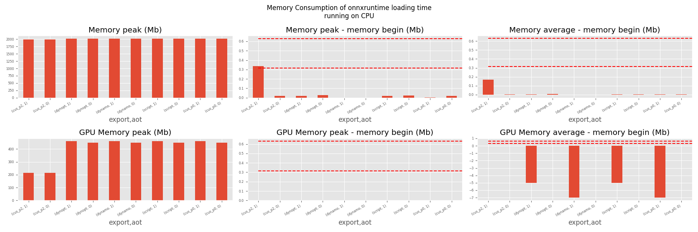
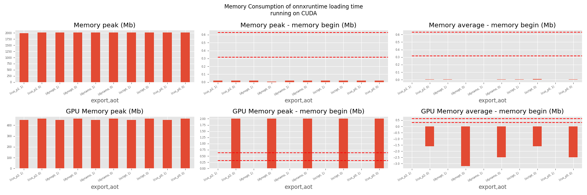
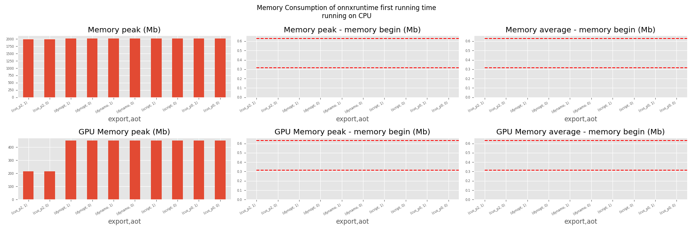
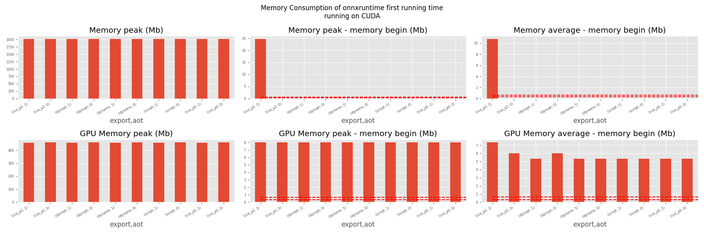
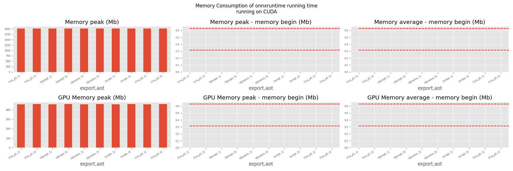

Note
Go to the end to download the full example code
201: Evaluate different ways to export a torch model to ONNX¶
The example evaluates the performance of onnxruntime of a simple torch model after it was converted into ONNX through different processes:
TorchScript-based ONNX Exporter, let’s call it script
TorchDynamo-based ONNX Exporter, let’s call it dynamo
if available, the previous model but optimized, dynopt
a custom exporter cus_p0, this exporter supports a very limited set of models, as dynamo, it relies on torch.fx but the design is closer to what tensorflow-onnx does.
the same exporter but unused nodes were removed and constants were folded, cus_p2
To run the script:
python _doc/examples/plot_torch_export --help
The script takes around 12 minutes with a larger models.
Some helpers¶
from experimental_experiment.args import get_parsed_args
script_args = get_parsed_args(
"plot_torch_export",
description=__doc__,
scenarios={
"small": "small model to test",
"middle": "55Mb model",
"large": "1Gb model",
},
warmup=5,
repeat=5,
maxtime=(
2,
"maximum time to run a model to measure the computation time, "
"it is 0.1 when scenario is small",
),
expose="scenarios,repeat,warmup",
)
import contextlib
import itertools
import os
import platform
import pprint
import multiprocessing
import time
import cProfile
import pstats
import io
import warnings
import logging
from pstats import SortKey
try:
with warnings.catch_warnings():
warnings.simplefilter("ignore")
import onnxruntime
has_cuda = "CUDAExecutionProvider" in onnxruntime.get_available_providers()
except ImportError:
print("onnxruntime not available.")
import sys
sys.exit(0)
import numpy as np
import matplotlib.pyplot as plt
import pandas
import onnx
from onnx_array_api.plotting.text_plot import onnx_simple_text_plot
from onnx_array_api.profiling import profile2graph
import torch
from torch import nn
import torch.nn.functional as F
import experimental_experiment
from experimental_experiment.torch_interpreter import to_onnx
from experimental_experiment.xbuilder import OptimizationOptions
from experimental_experiment.plotting.memory import memory_peak_plot
from experimental_experiment.ext_test_case import measure_time, get_figure
from experimental_experiment.memory_peak import start_spying_on
from tqdm import tqdm
has_cuda = has_cuda and torch.cuda.is_available()
logging.disable(logging.ERROR)
def system_info():
obs = {}
obs["processor"] = platform.processor()
obs["cores"] = multiprocessing.cpu_count()
try:
obs["cuda"] = 1 if torch.cuda.is_available() else 0
obs["cuda_count"] = torch.cuda.device_count()
obs["cuda_name"] = torch.cuda.get_device_name()
obs["cuda_capa"] = torch.cuda.get_device_capability()
except (RuntimeError, AssertionError):
# no cuda
pass
return obs
pprint.pprint(system_info())
{'cores': 8,
'cuda': 1,
'cuda_capa': (6, 1),
'cuda_count': 1,
'cuda_name': 'NVIDIA GeForce GTX 1060',
'processor': 'x86_64'}
Scripts arguments
if script_args.scenario in (None, "small"):
script_args.maxtime = 0.1
print(f"scenario={script_args.scenario or 'small'}")
print(f"warmup={script_args.warmup}")
print(f"repeat={script_args.repeat}")
print(f"maxtime={script_args.maxtime}")
scenario=small
warmup=5
repeat=5
maxtime=0.1
The model¶
A simple model to convert.
class MyModelClass(nn.Module):
def __init__(self, scenario=script_args.scenario):
super(MyModelClass, self).__init__()
if scenario == "middle":
self.large = False
self.conv1 = nn.Conv2d(1, 128, 5)
self.conv2 = nn.Conv2d(128, 16, 5)
self.fc1 = nn.Linear(13456, 1024)
self.fcs = []
self.fc2 = nn.Linear(1024, 128)
self.fc3 = nn.Linear(128, 10)
elif scenario in (None, "small"):
self.large = False
self.conv1 = nn.Conv2d(1, 16, 5)
self.conv2 = nn.Conv2d(16, 16, 5)
self.fc1 = nn.Linear(16, 512)
self.fcs = []
self.fc2 = nn.Linear(512, 128)
self.fc3 = nn.Linear(128, 10)
elif scenario in (None, "large"):
self.large = True
self.conv1 = nn.Conv2d(1, 128, 5)
self.conv2 = nn.Conv2d(128, 16, 5)
self.fc1 = nn.Linear(13456, 4096)
# torch script does not support loops.
self.fca = nn.Linear(4096, 4096)
self.fcb = nn.Linear(4096, 4096)
self.fcc = nn.Linear(4096, 4096)
self.fcd = nn.Linear(4096, 4096)
self.fce = nn.Linear(4096, 4096)
self.fcf = nn.Linear(4096, 4096)
self.fcg = nn.Linear(4096, 4096)
self.fch = nn.Linear(4096, 4096)
self.fci = nn.Linear(4096, 4096)
self.fck = nn.Linear(4096, 4096)
self.fcl = nn.Linear(4096, 4096)
self.fcm = nn.Linear(4096, 4096)
self.fcn = nn.Linear(4096, 4096)
# end of the unfolded loop.
self.fc2 = nn.Linear(4096, 128)
self.fc3 = nn.Linear(128, 10)
else:
raise ValueError(f"Unsupported scenario={scenario!r}.")
def forward(self, x):
x = F.max_pool2d(F.relu(self.conv1(x)), (2, 2))
x = F.max_pool2d(F.relu(self.conv2(x)), 2)
x = torch.flatten(x, 1)
x = F.relu(self.fc1(x))
if self.large:
# loop
x = F.relu(self.fca(x))
x = F.relu(self.fcb(x))
x = F.relu(self.fcc(x))
x = F.relu(self.fcd(x))
x = F.relu(self.fce(x))
x = F.relu(self.fcf(x))
x = F.relu(self.fcg(x))
x = F.relu(self.fch(x))
x = F.relu(self.fci(x))
x = F.relu(self.fck(x))
x = F.relu(self.fcl(x))
x = F.relu(self.fcm(x))
x = F.relu(self.fcn(x))
# end of the loop
x = F.relu(self.fc2(x))
x = self.fc3(x)
return x
def create_model_and_input(scenario=script_args.scenario):
if scenario == "middle":
shape = [1, 1, 128, 128]
elif scenario in (None, "small"):
shape = [1, 1, 16, 16]
elif scenario == "large":
shape = [1, 1, 128, 128]
else:
raise ValueError(f"Unsupported scenario={scenario!r}.")
input_tensor = torch.rand(*shape).to(torch.float32)
model = MyModelClass(scenario=scenario)
assert model(input_tensor) is not None
return model, input_tensor
def torch_model_size(model):
size_model = 0
for param in model.parameters():
size = param.numel() * torch.finfo(param.data.dtype).bits / 8
size_model += size
return size_model
model, input_tensor = create_model_and_input()
model_size = torch_model_size(model)
print(f"model size={model_size / 2 ** 20} Mb")
model size=0.31467437744140625 Mb
The exporters¶
def export_script(filename, model, *args):
with contextlib.redirect_stdout(io.StringIO()):
with warnings.catch_warnings():
warnings.simplefilter("ignore")
torch.onnx.export(model, *args, filename, input_names=["input"])
def export_dynamo(filename, model, *args):
with contextlib.redirect_stdout(io.StringIO()):
with warnings.catch_warnings():
warnings.simplefilter("ignore")
export_output = torch.onnx.dynamo_export(model, *args)
export_output.save(filename)
def export_dynopt(filename, model, *args):
with contextlib.redirect_stdout(io.StringIO()):
with warnings.catch_warnings():
warnings.simplefilter("ignore")
export_output = torch.onnx.dynamo_export(model, *args)
model_onnx = export_output.model_proto
from experimental_experiment.convert.convert_helper import (
optimize_model_proto,
)
optimized_model = optimize_model_proto(model_onnx)
with open(filename, "wb") as f:
f.write(optimized_model.SerializeToString())
def export_cus_p0(filename, model, *args):
onx = to_onnx(model, tuple(args), input_names=["input"])
with open(filename, "wb") as f:
f.write(onx.SerializeToString())
def export_cus_p2(filename, model, *args):
onx = to_onnx(
model,
tuple(args),
input_names=["input"],
options=OptimizationOptions(
remove_unused=True,
constant_folding=True,
),
)
with open(filename, "wb") as f:
f.write(onx.SerializeToString())
Let’s check they are working.
export_functions = [
export_script,
export_dynamo,
export_dynopt,
export_cus_p0,
export_cus_p2,
]
exporters = {f.__name__.replace("export_", ""): f for f in export_functions}
supported_exporters = {}
for k, v in exporters.items():
print(f"run exporter {k}")
filename = f"plot_torch_export_{k}.onnx"
try:
v(filename, model, input_tensor)
except Exception as e:
print(f"skipped due to {str(e)[:1000]}")
continue
supported_exporters[k] = v
print(f"done. size={os.stat(filename).st_size / 2 ** 20:1.0f} Mb")
run exporter script
done. size=0 Mb
run exporter dynamo
done. size=0 Mb
run exporter dynopt
done. size=0 Mb
run exporter cus_p0
done. size=0 Mb
run exporter cus_p2
done. size=0 Mb
Exporter memory¶
def flatten(ps):
obs = ps["cpu"].to_dict(unit=2**20)
if "gpus" in ps:
for i, g in enumerate(ps["gpus"]):
for k, v in g.to_dict(unit=2**20).items():
obs[f"gpu{i}_{k}"] = v
return obs
data = []
for k, v in supported_exporters.items():
print(f"run exporter for memory {k}")
filename = f"plot_torch_export_{k}.onnx"
if has_cuda:
torch.cuda.set_device(0)
stat = start_spying_on(cuda=1 if has_cuda else 0)
v(filename, model, input_tensor)
obs = flatten(stat.stop())
print("done.")
onx = onnx.load(filename)
obs.update(dict(nodes=len(onx.graph.node), export=k))
data.append(obs)
stat = start_spying_on(cuda=1 if has_cuda else 0)
exported_mod = torch.export.export(model, (input_tensor,))
obs = flatten(stat.stop())
obs.update(dict(export="torch.fx"))
data.append(obs)
run exporter for memory script
done.
run exporter for memory dynamo
done.
run exporter for memory dynopt
done.
run exporter for memory cus_p0
done.
run exporter for memory cus_p2
done.
The result.
df1 = pandas.DataFrame(data)
df1.to_csv("plot_torch_export_memory.csv", index=False)
df1.to_excel("plot_torch_export_memory.xlsx", index=False)
print(df1)
ax = memory_peak_plot(
data,
bars=[model_size * i / 2**20 for i in range(1, 5)],
suptitle=f"Memory Consumption of the Export\n"
f"model size={model_size / 2**20:1.0f} Mb",
)
get_figure(ax).savefig("plot_torch_export_memory.png")
peak mean n begin end gpu0_peak gpu0_mean gpu0_n gpu0_begin gpu0_end nodes export
0 3719.527344 3719.527344 0.000007 3719.527344 3719.527344 896.269531 896.269531 0.000007 896.269531 896.269531 12.0 script
1 3719.531250 3719.527507 0.000023 3719.527344 3719.531250 896.269531 896.269531 0.000023 896.269531 896.269531 13.0 dynamo
2 3719.976562 3719.606534 0.000031 3719.531250 3719.976562 896.269531 896.269531 0.000031 896.269531 896.269531 16.0 dynopt
3 3719.976562 3719.976562 0.000018 3719.976562 3719.976562 896.269531 896.269531 0.000018 896.269531 896.269531 12.0 cus_p0
4 3719.976562 3719.976562 0.000019 3719.976562 3719.976562 896.269531 896.269531 0.000019 896.269531 896.269531 12.0 cus_p2
5 3719.976562 3719.976562 0.000016 3719.976562 3719.976562 896.269531 896.269531 0.000016 896.269531 896.269531 NaN torch.fx
Exporter speed¶
data = []
for k, v in supported_exporters.items():
print(f"run exporter {k}")
filename = f"plot_torch_export_{k}.onnx"
times = []
for i in range(script_args.repeat):
begin = time.perf_counter()
v(filename, model, input_tensor)
duration = time.perf_counter() - begin
times.append(duration)
onx = onnx.load(filename)
print("done.")
data.append(
dict(
export=k,
time=np.mean(times),
min=min(times),
max=max(times),
first=times[0],
last=times[-1],
std=np.std(times),
nodes=len(onx.graph.node),
)
)
run exporter script
done.
run exporter dynamo
done.
run exporter dynopt
done.
run exporter cus_p0
done.
run exporter cus_p2
done.
The last export to measure time torch spends in export the model before any other export can begin the translation except the first one.
times = []
for i in range(script_args.repeat):
begin = time.perf_counter()
exported_mod = torch.export.export(model, (input_tensor,))
duration = time.perf_counter() - begin
times.append(duration)
data.append(
dict(
export="torch.fx",
time=np.mean(times),
min=min(times),
max=max(times),
first=times[0],
last=times[-1],
std=np.std(times),
nodes=len(onx.graph.node),
)
)
The result.
df1 = pandas.DataFrame(data)
df1.to_csv("plot_torch_export_time.csv", index=False)
df1.to_excel("plot_torch_export_time.xlsx", index=False)
print(df1)
fig, ax = plt.subplots(1, 1)
dfi = df1[["export", "time", "std"]].set_index("export")
dfi["time"].plot.bar(ax=ax, title="Export time", yerr=dfi["std"], rot=30)
fig.tight_layout()
fig.savefig("plot_torch_export_time.png")
export time min max first last std nodes
0 script 0.018919 0.018071 0.021353 0.021353 0.018456 0.001226 12
1 dynamo 0.199219 0.162365 0.320347 0.171026 0.320347 0.060746 13
2 dynopt 0.413759 0.375371 0.444545 0.421981 0.425924 0.023666 16
3 cus_p0 0.206005 0.177386 0.254977 0.254977 0.180870 0.033135 12
4 cus_p2 0.215977 0.193403 0.241789 0.241789 0.228991 0.017444 12
5 torch.fx 0.190301 0.121312 0.236615 0.236615 0.121312 0.042272 12
Exporter Profiling¶
def clean_text(text):
pathes = [
os.path.abspath(
os.path.normpath(os.path.join(os.path.dirname(torch.__file__), ".."))
),
os.path.abspath(
os.path.normpath(os.path.join(os.path.dirname(onnx.__file__), ".."))
),
os.path.abspath(
os.path.normpath(
os.path.join(os.path.dirname(experimental_experiment.__file__), "..")
)
),
]
for p in pathes:
text = text.replace(p, "")
text = text.replace("experimental_experiment", "experimental_experiment".upper())
return text
def profile_function(name, export_function, verbose=False):
print(f"profile {name}: {export_function}")
pr = cProfile.Profile()
pr.enable()
for i in range(script_args.repeat):
export_function("dummyc.onnx", model, input_tensor)
pr.disable()
s = io.StringIO()
sortby = SortKey.CUMULATIVE
ps = pstats.Stats(pr, stream=s).sort_stats(sortby)
ps.print_stats()
raw = s.getvalue()
text = "\n".join(raw.split("\n")[:200])
if verbose:
print(text)
with open(f"plot_torch_export_profile_{name}.txt", "w") as f:
f.write(raw)
root, nodes = profile2graph(ps, clean_text=clean_text)
text = root.to_text()
with open(f"plot_torch_export_profile_{name}_h.txt", "w") as f:
f.write(text)
print("done.")
profile_function("custom0", export_cus_p0, True)
profile_function("custom2", export_cus_p2)
profile custom0: <function export_cus_p0 at 0x7f1520d23880>
1059564 function calls (1006494 primitive calls) in 1.932 seconds
Ordered by: cumulative time
ncalls tottime percall cumtime percall filename:lineno(function)
5 0.000 0.000 1.971 0.394 /home/xadupre/github/experimental-experiment/_doc/examples/plot_torch_export_201.py:272(export_cus_p0)
5 0.000 0.000 1.967 0.393 /home/xadupre/github/experimental-experiment/experimental_experiment/torch_interpreter/onnx_export.py:234(to_onnx)
5 0.000 0.000 1.857 0.371 /home/xadupre/github/experimental-experiment/experimental_experiment/torch_interpreter/onnx_export.py:119(_make_builder_interpreter)
5 0.000 0.000 1.856 0.371 /home/xadupre/github/experimental-experiment/experimental_experiment/torch_interpreter/onnx_export.py:88(_export)
5 0.000 0.000 1.856 0.371 /home/xadupre/.local/lib/python3.10/site-packages/torch/export/__init__.py:73(export)
5 0.000 0.000 1.856 0.371 /home/xadupre/.local/lib/python3.10/site-packages/torch/export/_trace.py:613(wrapper)
5 0.000 0.000 1.855 0.371 /home/xadupre/.local/lib/python3.10/site-packages/torch/export/exported_program.py:80(wrapper)
5 0.002 0.000 1.855 0.371 /home/xadupre/.local/lib/python3.10/site-packages/torch/export/_trace.py:644(_export)
15/10 0.000 0.000 1.567 0.157 /home/xadupre/.local/lib/python3.10/site-packages/torch/_dynamo/utils.py:255(time_wrapper)
20/10 0.000 0.000 1.294 0.129 /home/xadupre/.local/lib/python3.10/site-packages/torch/_dynamo/eval_frame.py:427(_fn)
5 0.001 0.000 0.987 0.197 /home/xadupre/.local/lib/python3.10/site-packages/torch/export/_trace.py:406(_export_non_strict)
5 0.000 0.000 0.976 0.195 /home/xadupre/.local/lib/python3.10/site-packages/torch/_functorch/aot_autograd.py:927(aot_export_module)
5 0.000 0.000 0.973 0.195 /home/xadupre/.local/lib/python3.10/site-packages/torch/_functorch/aot_autograd.py:1187(_aot_export_function)
5 0.001 0.000 0.970 0.194 /home/xadupre/.local/lib/python3.10/site-packages/torch/_functorch/aot_autograd.py:411(create_aot_dispatcher_function)
120/55 0.000 0.000 0.920 0.017 /home/xadupre/.local/lib/python3.10/site-packages/torch/nn/modules/module.py:1523(_wrapped_call_impl)
120/55 0.001 0.000 0.920 0.017 /home/xadupre/.local/lib/python3.10/site-packages/torch/nn/modules/module.py:1529(_call_impl)
5 0.000 0.000 0.797 0.159 /home/xadupre/.local/lib/python3.10/site-packages/torch/export/_trace.py:314(_export_to_torch_ir)
5 0.001 0.000 0.795 0.159 /home/xadupre/.local/lib/python3.10/site-packages/torch/_dynamo/eval_frame.py:1176(inner)
15/10 0.000 0.000 0.688 0.069 /home/xadupre/.local/lib/python3.10/site-packages/torch/_dynamo/external_utils.py:34(inner)
970 0.041 0.000 0.687 0.001 /home/xadupre/.local/lib/python3.10/site-packages/torch/_subclasses/functional_tensor.py:267(__torch_dispatch__)
2670 0.009 0.000 0.644 0.000 /home/xadupre/.local/lib/python3.10/site-packages/torch/export/_safeguard.py:17(__torch_function__)
5 0.000 0.000 0.644 0.129 /home/xadupre/.local/lib/python3.10/site-packages/torch/_functorch/_aot_autograd/runtime_wrappers.py:410(aot_wrapper_dedupe)
5 0.000 0.000 0.643 0.129 /home/xadupre/.local/lib/python3.10/site-packages/torch/_functorch/_aot_autograd/runtime_wrappers.py:629(aot_wrapper_synthetic_base)
5 0.000 0.000 0.642 0.128 /home/xadupre/.local/lib/python3.10/site-packages/torch/_functorch/_aot_autograd/dispatch_and_compile_graph.py:50(aot_dispatch_base_graph)
5 0.000 0.000 0.605 0.121 /home/xadupre/.local/lib/python3.10/site-packages/torch/_dynamo/convert_frame.py:871(catch_errors)
5 0.000 0.000 0.605 0.121 /home/xadupre/.local/lib/python3.10/site-packages/torch/_dynamo/convert_frame.py:288(_convert_frame_assert)
10/5 0.000 0.000 0.604 0.121 /usr/lib/python3.10/contextlib.py:76(inner)
5 0.001 0.000 0.603 0.121 /home/xadupre/.local/lib/python3.10/site-packages/torch/_dynamo/convert_frame.py:444(_compile)
5 0.000 0.000 0.602 0.120 /home/xadupre/.local/lib/python3.10/site-packages/torch/_functorch/_aot_autograd/dispatch_and_compile_graph.py:34(_create_graph)
5 0.000 0.000 0.601 0.120 /home/xadupre/.local/lib/python3.10/site-packages/torch/fx/experimental/proxy_tensor.py:978(wrapped)
5 0.000 0.000 0.596 0.119 /home/xadupre/.local/lib/python3.10/site-packages/torch/_compile.py:20(inner)
5 0.000 0.000 0.596 0.119 /home/xadupre/.local/lib/python3.10/site-packages/torch/_dynamo/convert_frame.py:524(compile_inner)
5 0.000 0.000 0.594 0.119 /home/xadupre/.local/lib/python3.10/site-packages/torch/fx/experimental/proxy_tensor.py:535(dispatch_trace)
5 0.000 0.000 0.567 0.113 /home/xadupre/.local/lib/python3.10/site-packages/torch/fx/experimental/proxy_tensor.py:888(trace)
5 0.000 0.000 0.567 0.113 /home/xadupre/.local/lib/python3.10/site-packages/torch/fx/_symbolic_trace.py:663(trace)
5 0.000 0.000 0.540 0.108 /home/xadupre/.local/lib/python3.10/site-packages/torch/fx/experimental/proxy_tensor.py:551(wrapped)
2835/1985 0.008 0.000 0.510 0.000 /home/xadupre/.local/lib/python3.10/site-packages/torch/utils/_stats.py:15(wrapper)
15 0.002 0.000 0.481 0.032 /home/xadupre/.local/lib/python3.10/site-packages/torch/fx/interpreter.py:106(run)
210 0.002 0.000 0.472 0.002 /home/xadupre/.local/lib/python3.10/site-packages/torch/fx/interpreter.py:184(run_node)
10 0.000 0.000 0.464 0.046 /home/xadupre/.local/lib/python3.10/site-packages/torch/_functorch/_aot_autograd/utils.py:165(flat_fn)
10 0.000 0.000 0.462 0.046 /home/xadupre/.local/lib/python3.10/site-packages/torch/_functorch/_aot_autograd/traced_function_transforms.py:666(functional_call)
140 0.001 0.000 0.445 0.003 /home/xadupre/.local/lib/python3.10/site-packages/torch/_functorch/_aot_autograd/traced_function_transforms.py:648(run_node)
5 0.000 0.000 0.439 0.088 /home/xadupre/.local/lib/python3.10/site-packages/torch/_functorch/_aot_autograd/traced_function_transforms.py:346(_functionalized_f_helper)
2340/1280 0.010 0.000 0.391 0.000 /home/xadupre/.local/lib/python3.10/site-packages/torch/utils/_pytree.py:859(tree_map)
5 0.000 0.000 0.381 0.076 /home/xadupre/.local/lib/python3.10/site-packages/torch/_dynamo/bytecode_transformation.py:1028(transform_code_object)
5 0.000 0.000 0.363 0.073 /home/xadupre/.local/lib/python3.10/site-packages/torch/_dynamo/convert_frame.py:150(_fn)
5 0.000 0.000 0.361 0.072 /home/xadupre/.local/lib/python3.10/site-packages/torch/_dynamo/convert_frame.py:477(transform)
2140 0.007 0.000 0.328 0.000 /home/xadupre/.local/lib/python3.10/site-packages/torch/_subclasses/fake_tensor.py:886(__torch_dispatch__)
5 0.000 0.000 0.325 0.065 /home/xadupre/.local/lib/python3.10/site-packages/torch/_functorch/_aot_autograd/traced_function_transforms.py:65(inner_fn)
5 0.000 0.000 0.320 0.064 /home/xadupre/.local/lib/python3.10/site-packages/torch/_dynamo/symbolic_convert.py:2148(run)
5 0.000 0.000 0.320 0.064 /home/xadupre/.local/lib/python3.10/site-packages/torch/_dynamo/symbolic_convert.py:803(run)
280 0.003 0.000 0.319 0.001 /home/xadupre/.local/lib/python3.10/site-packages/torch/_dynamo/symbolic_convert.py:701(step)
2140 0.021 0.000 0.318 0.000 /home/xadupre/.local/lib/python3.10/site-packages/torch/_subclasses/fake_tensor.py:1215(dispatch)
8620/1420 0.042 0.000 0.307 0.000 /home/xadupre/.local/lib/python3.10/site-packages/torch/utils/_pytree.py:734(unflatten)
910 0.007 0.000 0.279 0.000 /home/xadupre/.local/lib/python3.10/site-packages/torch/_subclasses/fake_tensor.py:940(_cached_dispatch_impl)
2190 0.009 0.000 0.278 0.000 /home/xadupre/.local/lib/python3.10/site-packages/torch/utils/_pytree.py:1066(tree_map_only)
5 0.002 0.000 0.265 0.053 /home/xadupre/.local/lib/python3.10/site-packages/torch/_functorch/_aot_autograd/collect_metadata_analysis.py:90(inner)
60 0.000 0.000 0.237 0.004 /home/xadupre/.local/lib/python3.10/site-packages/torch/_dynamo/symbolic_convert.py:479(wrapper)
60 0.000 0.000 0.236 0.004 /home/xadupre/.local/lib/python3.10/site-packages/torch/_dynamo/symbolic_convert.py:1215(CALL_FUNCTION)
60 0.001 0.000 0.235 0.004 /home/xadupre/.local/lib/python3.10/site-packages/torch/_dynamo/symbolic_convert.py:654(call_function)
545 0.004 0.000 0.230 0.000 /home/xadupre/.local/lib/python3.10/site-packages/torch/fx/experimental/proxy_tensor.py:635(__torch_dispatch__)
50 0.000 0.000 0.227 0.005 /home/xadupre/.local/lib/python3.10/site-packages/torch/fx/interpreter.py:298(call_module)
110 0.000 0.000 0.214 0.002 /home/xadupre/.local/lib/python3.10/site-packages/torch/_functorch/_aot_autograd/functional_utils.py:21(to_fun)
5 0.001 0.000 0.213 0.043 /home/xadupre/.local/lib/python3.10/site-packages/torch/_dynamo/guards.py:998(__init__)
110 0.001 0.000 0.213 0.002 /home/xadupre/.local/lib/python3.10/site-packages/torch/_subclasses/functional_tensor.py:171(to_functional)
65 0.000 0.000 0.213 0.003 /home/xadupre/.local/lib/python3.10/site-packages/torch/_dynamo/variables/builder.py:1329(wrap_fx_proxy)
65 0.002 0.000 0.212 0.003 /home/xadupre/.local/lib/python3.10/site-packages/torch/_dynamo/variables/builder.py:1389(wrap_fx_proxy_cls)
545 0.001 0.000 0.212 0.000 /home/xadupre/.local/lib/python3.10/site-packages/torch/fx/experimental/proxy_tensor.py:666(inner_torch_dispatch)
70 0.000 0.000 0.205 0.003 /home/xadupre/.local/lib/python3.10/site-packages/torch/fx/interpreter.py:256(call_function)
75 0.004 0.000 0.193 0.003 /home/xadupre/.local/lib/python3.10/site-packages/torch/fx/experimental/proxy_tensor.py:294(proxy_call)
5 0.001 0.000 0.183 0.037 /home/xadupre/.local/lib/python3.10/site-packages/torch/_dynamo/guards.py:1071(compile_check_fn)
50 0.001 0.000 0.168 0.003 /home/xadupre/.local/lib/python3.10/site-packages/torch/fx/_symbolic_trace.py:455(call_module)
60 0.002 0.000 0.167 0.003 /home/xadupre/.local/lib/python3.10/site-packages/torch/_dynamo/utils.py:1619(get_fake_value)
90 0.000 0.000 0.166 0.002 /home/xadupre/.local/lib/python3.10/site-packages/torch/_dynamo/utils.py:1196(wrap_fake_exception)
25 0.001 0.000 0.162 0.006 /home/xadupre/.local/lib/python3.10/site-packages/torch/_dynamo/variables/nn_module.py:244(call_function)
430/325 0.007 0.000 0.162 0.000 {method 'detach' of 'torch._C.TensorBase' objects}
60 0.000 0.000 0.160 0.003 /home/xadupre/.local/lib/python3.10/site-packages/torch/nn/modules/linear.py:115(forward)
90/60 0.008 0.000 0.159 0.003 {built-in method torch._C._nn.linear}
25 0.000 0.000 0.159 0.006 /home/xadupre/.local/lib/python3.10/site-packages/torch/fx/_symbolic_trace.py:761(module_call_wrapper)
2535 0.004 0.000 0.158 0.000 /home/xadupre/.local/lib/python3.10/site-packages/torch/utils/_pytree.py:799(tree_flatten)
25 0.000 0.000 0.158 0.006 /home/xadupre/.local/lib/python3.10/site-packages/torch/fx/experimental/proxy_tensor.py:937(call_module)
25 0.000 0.000 0.156 0.006 /home/xadupre/.local/lib/python3.10/site-packages/torch/fx/_symbolic_trace.py:763(forward)
60 0.001 0.000 0.154 0.003 /home/xadupre/.local/lib/python3.10/site-packages/torch/overrides.py:1572(handle_torch_function)
8910/2535 0.031 0.000 0.154 0.000 /home/xadupre/.local/lib/python3.10/site-packages/torch/utils/_pytree.py:778(_tree_flatten_helper)
80 0.000 0.000 0.144 0.002 /home/xadupre/.local/lib/python3.10/site-packages/torch/fx/experimental/proxy_tensor.py:208(track_tensor_tree)
155/80 0.001 0.000 0.144 0.002 /home/xadupre/.local/lib/python3.10/site-packages/torch/fx/experimental/proxy_tensor.py:209(wrap_with_proxy)
2225/1495 0.004 0.000 0.143 0.000 /home/xadupre/.local/lib/python3.10/site-packages/torch/_ops.py:597(__call__)
150 0.001 0.000 0.126 0.001 /home/xadupre/.local/lib/python3.10/site-packages/torch/fx/experimental/proxy_tensor.py:172(set_meta)
5 0.001 0.000 0.124 0.025 /home/xadupre/.local/lib/python3.10/site-packages/torch/_dynamo/guards.py:1289(build_guard_function)
40 0.000 0.000 0.124 0.003 /home/xadupre/.local/lib/python3.10/site-packages/torch/fx/graph.py:1299(python_code)
170/150 0.001 0.000 0.119 0.001 /home/xadupre/.local/lib/python3.10/site-packages/torch/fx/experimental/proxy_tensor.py:139(extract_val)
160 0.000 0.000 0.118 0.001 /home/xadupre/.local/lib/python3.10/site-packages/torch/fx/experimental/proxy_tensor.py:136(snapshot_fake)
35 0.001 0.000 0.118 0.003 /home/xadupre/.local/lib/python3.10/site-packages/torch/fx/graph_module.py:707(recompile)
40 0.000 0.000 0.116 0.003 /home/xadupre/.local/lib/python3.10/site-packages/torch/fx/graph.py:1361(_python_code)
40 0.011 0.000 0.115 0.003 /home/xadupre/.local/lib/python3.10/site-packages/torch/fx/graph.py:380(_gen_python_code)
60/40 0.000 0.000 0.113 0.003 /home/xadupre/.local/lib/python3.10/site-packages/torch/_jit_internal.py:487(fn)
60/40 0.001 0.000 0.113 0.003 /home/xadupre/.local/lib/python3.10/site-packages/torch/nn/functional.py:774(_max_pool2d)
550/175 0.002 0.000 0.112 0.001 /usr/lib/python3.10/copy.py:259(_reconstruct)
910 0.018 0.000 0.111 0.000 /home/xadupre/.local/lib/python3.10/site-packages/torch/_subclasses/fake_tensor.py:975(_cache_key)
25 0.000 0.000 0.111 0.004 /home/xadupre/.local/lib/python3.10/site-packages/torch/_dynamo/utils.py:1207(deepcopy_to_fake_tensor)
1530/35 0.007 0.000 0.111 0.003 /usr/lib/python3.10/copy.py:128(deepcopy)
40 0.003 0.000 0.111 0.003 {built-in method torch.max_pool2d}
25 0.000 0.000 0.111 0.004 /home/xadupre/.local/lib/python3.10/site-packages/torch/_dynamo/utils.py:1209(<lambda>)
25 0.001 0.000 0.108 0.004 /usr/lib/python3.10/copy.py:227(_deepcopy_dict)
164675/162365 0.091 0.000 0.105 0.000 {built-in method builtins.isinstance}
4670/1645 0.009 0.000 0.103 0.000 /home/xadupre/.local/lib/python3.10/site-packages/torch/utils/_pytree.py:792(<listcomp>)
55 0.000 0.000 0.102 0.002 /home/xadupre/.local/lib/python3.10/site-packages/torch/_functorch/_aot_autograd/collect_metadata_analysis.py:80(_to_fun)
230 0.001 0.000 0.100 0.000 /home/xadupre/.local/lib/python3.10/site-packages/torch/_subclasses/fake_tensor.py:338(__call__)
5285/300 0.011 0.000 0.100 0.000 /usr/lib/python3.10/ast.py:414(visit)
230 0.001 0.000 0.100 0.000 /home/xadupre/.local/lib/python3.10/site-packages/torch/_subclasses/fake_tensor.py:260(from_real_tensor)
40 0.000 0.000 0.096 0.002 /home/xadupre/.local/lib/python3.10/site-packages/torch/nn/modules/conv.py:459(forward)
40 0.000 0.000 0.096 0.002 /home/xadupre/.local/lib/python3.10/site-packages/torch/nn/modules/conv.py:451(_conv_forward)
60/40 0.005 0.000 0.095 0.002 {built-in method torch.conv2d}
5 0.001 0.000 0.094 0.019 /home/xadupre/.local/lib/python3.10/site-packages/torch/_dynamo/eval_frame.py:1224(result_capturing_wrapper)
50 0.001 0.000 0.093 0.002 /home/xadupre/.local/lib/python3.10/site-packages/torch/nn/parameter.py:55(__deepcopy__)
275 0.002 0.000 0.093 0.000 /home/xadupre/.local/lib/python3.10/site-packages/torch/fx/proxy.py:173(create_proxy)
170 0.004 0.000 0.092 0.001 /home/xadupre/.local/lib/python3.10/site-packages/torch/_subclasses/meta_utils.py:889(__call__)
120/80 0.000 0.000 0.091 0.001 /home/xadupre/.local/lib/python3.10/site-packages/torch/nn/functional.py:1489(relu)
140 0.004 0.000 0.091 0.001 /home/xadupre/.local/lib/python3.10/site-packages/torch/_subclasses/fake_tensor.py:1242(_dispatch_impl)
250 0.002 0.000 0.090 0.000 /home/xadupre/.local/lib/python3.10/site-packages/torch/_subclasses/fake_tensor.py:1757(__torch_function__)
80 0.004 0.000 0.089 0.001 {built-in method torch.relu}
170 0.012 0.000 0.087 0.001 /home/xadupre/.local/lib/python3.10/site-packages/torch/_subclasses/meta_utils.py:205(meta_tensor)
110 0.003 0.000 0.083 0.001 {built-in method torch._to_functional_tensor}
220 0.004 0.000 0.078 0.000 {built-in method torch._mirror_autograd_meta_to}
4410 0.008 0.000 0.077 0.000 /home/xadupre/.local/lib/python3.10/site-packages/torch/fx/node.py:699(map_arg)
35 0.001 0.000 0.070 0.002 /home/xadupre/.local/lib/python3.10/site-packages/torch/_dynamo/variables/torch.py:669(call_function)
7980/7280 0.011 0.000 0.069 0.000 {built-in method builtins.next}
20 0.001 0.000 0.067 0.003 {built-in method }
5 0.000 0.000 0.067 0.013 /home/xadupre/.local/lib/python3.10/site-packages/torch/_dynamo/eval_frame.py:918(rewrite_signature)
165 0.001 0.000 0.067 0.000 /home/xadupre/.local/lib/python3.10/site-packages/torch/_subclasses/fake_tensor.py:1638(from_tensor)
8590/4415 0.031 0.000 0.066 0.000 /home/xadupre/.local/lib/python3.10/site-packages/torch/fx/node.py:707(map_aggregate)
435/385 0.003 0.000 0.064 0.000 /home/xadupre/.local/lib/python3.10/site-packages/torch/nn/modules/module.py:1706(__setattr__)
20 0.001 0.000 0.064 0.003 /home/xadupre/.local/lib/python3.10/site-packages/torch/fx/graph_module.py:353(__init__)
1115/895 0.011 0.000 0.064 0.000 /home/xadupre/.local/lib/python3.10/site-packages/torch/_subclasses/fake_tensor.py:1035(_prep_args_for_hash)
650 0.002 0.000 0.062 0.000 /home/xadupre/.local/lib/python3.10/site-packages/torch/_dynamo/guards.py:138(_ast_unparse)
5 0.001 0.000 0.062 0.012 /home/xadupre/github/experimental-experiment/experimental_experiment/xbuilder/graph_builder.py:2065(process)
280 0.007 0.000 0.061 0.000 /home/xadupre/.local/lib/python3.10/site-packages/torch/_subclasses/functional_tensor.py:79(__new__)
770 0.008 0.000 0.060 0.000 /home/xadupre/.local/lib/python3.10/site-packages/torch/_subclasses/fake_tensor.py:1144(_output_from_cache_entry)
145 0.001 0.000 0.060 0.000 /home/xadupre/github/experimental-experiment/experimental_experiment/torch_interpreter/interpreter.py:45(run_node)
5 0.000 0.000 0.060 0.012 /home/xadupre/.local/lib/python3.10/site-packages/torch/_functorch/functional_call.py:10(functional_call)
5 0.000 0.000 0.060 0.012 /home/xadupre/.local/lib/python3.10/site-packages/torch/nn/utils/stateless.py:229(_functional_call)
650 0.002 0.000 0.060 0.000 /usr/lib/python3.10/ast.py:1679(unparse)
285 0.003 0.000 0.059 0.000 /home/xadupre/.local/lib/python3.10/site-packages/torch/fx/proxy.py:117(create_node)
20 0.000 0.000 0.059 0.003 /home/xadupre/.local/lib/python3.10/site-packages/torch/fx/graph_module.py:462(graph)
150 0.002 0.000 0.058 0.000 /home/xadupre/.local/lib/python3.10/site-packages/torch/_subclasses/fake_tensor.py:531(__torch_dispatch__)
650 0.001 0.000 0.058 0.000 /usr/lib/python3.10/ast.py:811(visit)
5 0.000 0.000 0.057 0.011 /home/xadupre/.local/lib/python3.10/site-packages/torch/fx/_lazy_graph_module.py:112(_lazy_forward)
130/65 0.004 0.000 0.057 0.001 {built-in method torch.tensor}
135 0.001 0.000 0.056 0.000 /home/xadupre/.local/lib/python3.10/site-packages/torch/_dynamo/guards.py:1083(add_code_part)
3200/650 0.007 0.000 0.056 0.000 /usr/lib/python3.10/ast.py:801(traverse)
100 0.000 0.000 0.055 0.001 /home/xadupre/.local/lib/python3.10/site-packages/torch/_dynamo/guards.py:1296(replace)
100 0.001 0.000 0.055 0.001 /home/xadupre/.local/lib/python3.10/site-packages/torch/_dynamo/guards.py:968(replace)
135 0.001 0.000 0.055 0.000 /home/xadupre/.local/lib/python3.10/site-packages/torch/_dynamo/guards.py:173(get_verbose_code_part)
30/20 0.003 0.000 0.054 0.003 {built-in method torch.flatten}
12670 0.016 0.000 0.054 0.000 /home/xadupre/.local/lib/python3.10/site-packages/torch/utils/_pytree.py:608(_is_leaf)
18515 0.021 0.000 0.054 0.000 /home/xadupre/.local/lib/python3.10/site-packages/torch/utils/_pytree.py:601(_get_node_type)
10 0.000 0.000 0.054 0.005 /home/xadupre/.local/lib/python3.10/site-packages/torch/_decomp/decompositions_for_rng.py:129(reset)
5 0.000 0.000 0.053 0.011 /home/xadupre/.local/lib/python3.10/site-packages/torch/_dynamo/guards.py:959(count)
4675 0.007 0.000 0.053 0.000 <string>:2(__init__)
295 0.003 0.000 0.053 0.000 /home/xadupre/.local/lib/python3.10/site-packages/torch/fx/graph.py:894(create_node)
30 0.000 0.000 0.052 0.002 /home/xadupre/.local/lib/python3.10/site-packages/torch/_decomp/decompositions_for_rng.py:71(__init__)
30 0.000 0.000 0.052 0.002 /home/xadupre/.local/lib/python3.10/site-packages/torch/_decomp/decompositions_for_rng.py:74(reset)
85 0.001 0.000 0.051 0.001 /home/xadupre/github/experimental-experiment/experimental_experiment/torch_interpreter/interpreter.py:703(call_function)
100 0.001 0.000 0.051 0.001 /home/xadupre/.local/lib/python3.10/site-packages/torch/utils/_traceback.py:170(summary)
1325/100 0.004 0.000 0.050 0.001 /home/xadupre/.local/lib/python3.10/site-packages/torch/_dynamo/guards.py:906(visit)
300/245 0.006 0.000 0.050 0.000 {method 'clone' of 'torch._C.TensorBase' objects}
1325/100 0.007 0.000 0.050 0.000 /usr/lib/python3.10/ast.py:420(generic_visit)
60 0.000 0.000 0.049 0.001 /home/xadupre/.local/lib/python3.10/site-packages/torch/_dynamo/utils.py:1668(<lambda>)
60 0.000 0.000 0.049 0.001 /home/xadupre/.local/lib/python3.10/site-packages/torch/_dynamo/utils.py:1758(run_node)
110 0.001 0.000 0.048 0.000 /home/xadupre/.local/lib/python3.10/site-packages/torch/_dynamo/variables/builder.py:263(__call__)
3790/3510 0.006 0.000 0.048 0.000 /usr/lib/python3.10/contextlib.py:130(__enter__)
5 0.000 0.000 0.047 0.009 /home/xadupre/.local/lib/python3.10/site-packages/torch/_dynamo/eval_frame.py:860(transform)
5 0.000 0.000 0.047 0.009 /home/xadupre/.local/lib/python3.10/site-packages/torch/fx/interpreter.py:500(transform)
5 0.001 0.000 0.047 0.009 /home/xadupre/github/experimental-experiment/experimental_experiment/xbuilder/graph_builder.py:2091(to_onnx)
795 0.007 0.000 0.046 0.000 /home/xadupre/.local/lib/python3.10/site-packages/torch/fx/graph.py:544(emit_node)
4675 0.014 0.000 0.046 0.000 /home/xadupre/.local/lib/python3.10/site-packages/torch/utils/_pytree.py:629(__post_init__)
5 0.000 0.000 0.045 0.009 /home/xadupre/.local/lib/python3.10/site-packages/torch/fx/graph_module.py:736(call_wrapped)
50 0.000 0.000 0.045 0.001 /home/xadupre/.local/lib/python3.10/site-packages/torch/nn/parameter.py:34(__new__)
5 0.000 0.000 0.045 0.009 /home/xadupre/.local/lib/python3.10/site-packages/torch/fx/graph_module.py:299(__call__)
100 0.007 0.000 0.044 0.000 /home/xadupre/.local/lib/python3.10/site-packages/torch/utils/_traceback.py:246(_extract_symbolized_tb)
65 0.003 0.000 0.044 0.001 /home/xadupre/.local/lib/python3.10/site-packages/torch/_dynamo/variables/builder.py:392(_wrap)
1010 0.016 0.000 0.043 0.000 /home/xadupre/.local/lib/python3.10/site-packages/torch/_subclasses/fake_tensor.py:695(extract_tensor_metadata)
15 0.000 0.000 0.042 0.003 /home/xadupre/.local/lib/python3.10/site-packages/torch/fx/_lazy_graph_module.py:54(_make_graph_module)
1220/685 0.014 0.000 0.042 0.000 {built-in method torch._ops.prim.}
5795/5290 0.006 0.000 0.041 0.000 /home/xadupre/.local/lib/python3.10/site-packages/torch/fx/node.py:713(<genexpr>)
65 0.001 0.000 0.040 0.001 /home/xadupre/.local/lib/python3.10/site-packages/torch/_dynamo/symbolic_convert.py:1309(LOAD_ATTR)
5 0.000 0.000 0.040 0.008 /home/xadupre/.local/lib/python3.10/site-packages/torch/_dynamo/symbolic_convert.py:2039(__init__)
5075 0.007 0.000 0.040 0.000 /usr/lib/python3.10/traceback.py:259(__init__)
5 0.000 0.000 0.040 0.008 /home/xadupre/github/experimental-experiment/experimental_experiment/xbuilder/graph_builder.py:2244(optimize)
935/100 0.003 0.000 0.039 0.000 /home/xadupre/.local/lib/python3.10/site-packages/torch/_dynamo/guards.py:922(visit)
860/100 0.005 0.000 0.038 0.000 /usr/lib/python3.10/ast.py:488(generic_visit)
2190 0.008 0.000 0.037 0.000 /home/xadupre/.local/lib/python3.10/site-packages/torch/utils/_pytree.py:980(map_only)
5915 0.011 0.000 0.036 0.000 /usr/lib/python3.10/traceback.py:301(line)
5 0.000 0.000 0.035 0.007 /home/xadupre/github/experimental-experiment/experimental_experiment/xbuilder/graph_builder.py:2345(optimize_with_patterns)
5 0.000 0.000 0.035 0.007 /home/xadupre/.local/lib/python3.10/site-packages/torch/export/exported_program.py:129(__init__)
done.
profile custom2: <function export_cus_p2 at 0x7f1520d236d0>
done.
Same with dynamo-exporter.
profile_function("dynamo", export_dynamo, verbose=True)
if "dynopt" in supported_exporters:
profile_function("dynopt", export_dynopt)
profile dynamo: <function export_dynamo at 0x7f1520d23910>
1715390 function calls (1649660 primitive calls) in 2.719 seconds
Ordered by: cumulative time
ncalls tottime percall cumtime percall filename:lineno(function)
5 0.002 0.000 2.869 0.574 /home/xadupre/github/experimental-experiment/_doc/examples/plot_torch_export_201.py:247(export_dynamo)
5 0.000 0.000 2.859 0.572 /home/xadupre/.local/lib/python3.10/site-packages/torch/onnx/_internal/exporter.py:1337(dynamo_export)
5 0.000 0.000 2.196 0.439 /home/xadupre/.local/lib/python3.10/site-packages/torch/onnx/_internal/exporter.py:1163(export)
5 0.001 0.000 2.000 0.400 /home/xadupre/.local/lib/python3.10/site-packages/torch/onnx/_internal/fx/dynamo_graph_extractor.py:187(generate_fx)
30/15 0.000 0.000 1.434 0.096 /home/xadupre/.local/lib/python3.10/site-packages/torch/_dynamo/eval_frame.py:427(_fn)
605/35 0.016 0.000 1.393 0.040 /home/xadupre/.local/lib/python3.10/site-packages/torch/onnx/_internal/diagnostics/infra/decorator.py:71(wrapper)
5 0.000 0.000 1.281 0.256 /home/xadupre/.local/lib/python3.10/site-packages/torch/onnx/_internal/fx/dynamo_graph_extractor.py:234(pre_export_passes)
5 0.001 0.000 1.281 0.256 /home/xadupre/.local/lib/python3.10/site-packages/torch/onnx/_internal/exporter.py:1445(common_pre_export_passes)
30 0.000 0.000 1.244 0.041 /home/xadupre/.local/lib/python3.10/site-packages/torch/onnx/_internal/fx/_pass.py:240(run)
25/15 0.000 0.000 0.889 0.059 /home/xadupre/.local/lib/python3.10/site-packages/torch/_dynamo/external_utils.py:34(inner)
3165/1440 0.008 0.000 0.887 0.001 /home/xadupre/.local/lib/python3.10/site-packages/torch/utils/_stats.py:15(wrapper)
20 0.004 0.000 0.876 0.044 /home/xadupre/.local/lib/python3.10/site-packages/torch/fx/interpreter.py:106(run)
490 0.004 0.000 0.834 0.002 /home/xadupre/.local/lib/python3.10/site-packages/torch/fx/interpreter.py:184(run_node)
10 0.001 0.000 0.810 0.081 /home/xadupre/.local/lib/python3.10/site-packages/torch/fx/experimental/proxy_tensor.py:978(wrapped)
10 0.000 0.000 0.804 0.080 /home/xadupre/.local/lib/python3.10/site-packages/torch/_compile.py:20(inner)
10 0.000 0.000 0.801 0.080 /home/xadupre/.local/lib/python3.10/site-packages/torch/fx/experimental/proxy_tensor.py:535(dispatch_trace)
10 0.001 0.000 0.739 0.074 /home/xadupre/.local/lib/python3.10/site-packages/torch/fx/_symbolic_trace.py:663(trace)
10 0.000 0.000 0.716 0.072 /home/xadupre/.local/lib/python3.10/site-packages/torch/fx/experimental/proxy_tensor.py:551(wrapped)
5 0.000 0.000 0.712 0.142 /home/xadupre/.local/lib/python3.10/site-packages/torch/_dynamo/eval_frame.py:1176(inner)
10 0.000 0.000 0.701 0.070 /home/xadupre/.local/lib/python3.10/site-packages/torch/onnx/_internal/fx/passes/_utils.py:28(wrapped)
5 0.001 0.000 0.661 0.132 /home/xadupre/.local/lib/python3.10/site-packages/torch/onnx/_internal/exporter.py:356(__init__)
575 0.004 0.000 0.648 0.001 /home/xadupre/.local/lib/python3.10/site-packages/torch/fx/experimental/proxy_tensor.py:635(__torch_dispatch__)
5 0.000 0.000 0.632 0.126 /home/xadupre/.local/lib/python3.10/site-packages/torch/onnx/_internal/fx/dynamo_graph_extractor.py:166(wrapped)
575 0.002 0.000 0.629 0.001 /home/xadupre/.local/lib/python3.10/site-packages/torch/fx/experimental/proxy_tensor.py:666(inner_torch_dispatch)
5 0.002 0.000 0.619 0.124 /home/xadupre/.local/lib/python3.10/site-packages/torch/onnx/_internal/fx/decomposition_table.py:78(create_onnx_friendly_decomposition_table)
190 0.009 0.000 0.614 0.003 /home/xadupre/.local/lib/python3.10/site-packages/torch/fx/experimental/proxy_tensor.py:294(proxy_call)
5 0.110 0.022 0.612 0.122 /home/xadupre/.local/lib/python3.10/site-packages/torch/onnx/_internal/fx/decomposition_table.py:18(_create_onnx_supports_op_overload_table)
1065/555 0.002 0.000 0.597 0.001 /home/xadupre/.local/lib/python3.10/site-packages/torch/_ops.py:597(__call__)
265 0.001 0.000 0.582 0.002 /home/xadupre/.local/lib/python3.10/site-packages/torch/fx/interpreter.py:256(call_function)
10 0.000 0.000 0.543 0.054 /home/xadupre/.local/lib/python3.10/site-packages/torch/_dynamo/convert_frame.py:871(catch_errors)
5 0.000 0.000 0.542 0.108 /home/xadupre/.local/lib/python3.10/site-packages/torch/_dynamo/convert_frame.py:288(_convert_frame_assert)
10/5 0.000 0.000 0.541 0.108 /usr/lib/python3.10/contextlib.py:76(inner)
5 0.001 0.000 0.541 0.108 /home/xadupre/.local/lib/python3.10/site-packages/torch/_dynamo/convert_frame.py:444(_compile)
10/5 0.000 0.000 0.535 0.107 /home/xadupre/.local/lib/python3.10/site-packages/torch/_dynamo/utils.py:255(time_wrapper)
5 0.000 0.000 0.534 0.107 /home/xadupre/.local/lib/python3.10/site-packages/torch/_dynamo/convert_frame.py:524(compile_inner)
2440/1780 0.008 0.000 0.493 0.000 /home/xadupre/.local/lib/python3.10/site-packages/torch/_subclasses/fake_tensor.py:886(__torch_dispatch__)
2440/1780 0.023 0.000 0.485 0.000 /home/xadupre/.local/lib/python3.10/site-packages/torch/_subclasses/fake_tensor.py:1215(dispatch)
1385/1025 0.011 0.000 0.453 0.000 /home/xadupre/.local/lib/python3.10/site-packages/torch/_subclasses/fake_tensor.py:940(_cached_dispatch_impl)
5 0.000 0.000 0.436 0.087 /home/xadupre/.local/lib/python3.10/site-packages/torch/onnx/_internal/fx/passes/functionalization.py:101(_run)
5 0.000 0.000 0.431 0.086 /home/xadupre/.local/lib/python3.10/site-packages/torch/onnx/_internal/fx/passes/decomp.py:32(_run)
5 0.000 0.000 0.354 0.071 /home/xadupre/.local/lib/python3.10/site-packages/torch/onnx/_internal/fx/passes/functionalization.py:80(wrapped)
5 0.000 0.000 0.350 0.070 /home/xadupre/.local/lib/python3.10/site-packages/torch/_dynamo/bytecode_transformation.py:1028(transform_code_object)
5 0.000 0.000 0.334 0.067 /home/xadupre/.local/lib/python3.10/site-packages/torch/_dynamo/convert_frame.py:150(_fn)
5 0.000 0.000 0.332 0.066 /home/xadupre/.local/lib/python3.10/site-packages/torch/_dynamo/convert_frame.py:477(transform)
37760 0.044 0.000 0.304 0.000 /home/xadupre/.local/lib/python3.10/site-packages/torch/onnx/_internal/exporter.py:250(is_registered_op)
5 0.000 0.000 0.295 0.059 /home/xadupre/.local/lib/python3.10/site-packages/torch/_dynamo/symbolic_convert.py:2148(run)
5 0.000 0.000 0.295 0.059 /home/xadupre/.local/lib/python3.10/site-packages/torch/_dynamo/symbolic_convert.py:803(run)
280 0.003 0.000 0.294 0.001 /home/xadupre/.local/lib/python3.10/site-packages/torch/_dynamo/symbolic_convert.py:701(step)
85/55 0.000 0.000 0.262 0.005 /home/xadupre/.local/lib/python3.10/site-packages/torch/nn/modules/module.py:1523(_wrapped_call_impl)
85/55 0.001 0.000 0.262 0.005 /home/xadupre/.local/lib/python3.10/site-packages/torch/nn/modules/module.py:1529(_call_impl)
37835 0.066 0.000 0.261 0.000 /home/xadupre/.local/lib/python3.10/site-packages/torch/onnx/_internal/exporter.py:227(get_op_functions)
350/170 0.016 0.000 0.259 0.002 /home/xadupre/.local/lib/python3.10/site-packages/torch/_subclasses/fake_tensor.py:1242(_dispatch_impl)
1520 0.006 0.000 0.250 0.000 /home/xadupre/.local/lib/python3.10/site-packages/torch/utils/_pytree.py:859(tree_map)
60 0.000 0.000 0.220 0.004 /home/xadupre/.local/lib/python3.10/site-packages/torch/_dynamo/symbolic_convert.py:479(wrapper)
60 0.000 0.000 0.218 0.004 /home/xadupre/.local/lib/python3.10/site-packages/torch/_dynamo/symbolic_convert.py:1215(CALL_FUNCTION)
60 0.001 0.000 0.217 0.004 /home/xadupre/.local/lib/python3.10/site-packages/torch/_dynamo/symbolic_convert.py:654(call_function)
70 0.001 0.000 0.208 0.003 /home/xadupre/.local/lib/python3.10/site-packages/torch/fx/graph_module.py:707(recompile)
75 0.001 0.000 0.201 0.003 /home/xadupre/.local/lib/python3.10/site-packages/torch/fx/graph.py:1299(python_code)
65 0.000 0.000 0.196 0.003 /home/xadupre/.local/lib/python3.10/site-packages/torch/_dynamo/variables/builder.py:1329(wrap_fx_proxy)
65 0.002 0.000 0.196 0.003 /home/xadupre/.local/lib/python3.10/site-packages/torch/_dynamo/variables/builder.py:1389(wrap_fx_proxy_cls)
25 0.000 0.000 0.191 0.008 /home/xadupre/.local/lib/python3.10/site-packages/torch/fx/interpreter.py:298(call_module)
25 0.000 0.000 0.190 0.008 /home/xadupre/.local/lib/python3.10/site-packages/torch/fx/_symbolic_trace.py:761(module_call_wrapper)
25 0.000 0.000 0.189 0.008 /home/xadupre/.local/lib/python3.10/site-packages/torch/fx/experimental/proxy_tensor.py:493(call_module)
25 0.000 0.000 0.189 0.008 /home/xadupre/.local/lib/python3.10/site-packages/torch/fx/_symbolic_trace.py:763(forward)
5 0.000 0.000 0.189 0.038 /home/xadupre/.local/lib/python3.10/site-packages/torch/onnx/_internal/fx/passes/modularization.py:850(_run)
75 0.001 0.000 0.188 0.003 /home/xadupre/.local/lib/python3.10/site-packages/torch/fx/graph.py:1361(_python_code)
75 0.018 0.000 0.188 0.003 /home/xadupre/.local/lib/python3.10/site-packages/torch/fx/graph.py:380(_gen_python_code)
5 0.001 0.000 0.184 0.037 /home/xadupre/.local/lib/python3.10/site-packages/torch/_dynamo/guards.py:998(__init__)
365 0.002 0.000 0.162 0.000 /home/xadupre/.local/lib/python3.10/site-packages/torch/fx/proxy.py:173(create_proxy)
5 0.000 0.000 0.160 0.032 /home/xadupre/.local/lib/python3.10/site-packages/torch/onnx/_internal/fx/passes/type_promotion.py:1716(_run)
8065/1700 0.037 0.000 0.156 0.000 /home/xadupre/.local/lib/python3.10/site-packages/torch/utils/_pytree.py:734(unflatten)
5 0.001 0.000 0.156 0.031 /home/xadupre/.local/lib/python3.10/site-packages/torch/_dynamo/guards.py:1071(compile_check_fn)
9470 0.017 0.000 0.156 0.000 /home/xadupre/.local/lib/python3.10/site-packages/torch/fx/node.py:699(map_arg)
60 0.002 0.000 0.155 0.003 /home/xadupre/.local/lib/python3.10/site-packages/torch/_dynamo/utils.py:1619(get_fake_value)
218775/214100 0.115 0.000 0.154 0.000 {built-in method builtins.isinstance}
90 0.000 0.000 0.154 0.002 /home/xadupre/.local/lib/python3.10/site-packages/torch/_dynamo/utils.py:1196(wrap_fake_exception)
25 0.001 0.000 0.150 0.006 /home/xadupre/.local/lib/python3.10/site-packages/torch/_dynamo/variables/nn_module.py:244(call_function)
45 0.000 0.000 0.148 0.003 /home/xadupre/.local/lib/python3.10/site-packages/torch/nn/modules/linear.py:115(forward)
45 0.006 0.000 0.147 0.003 {built-in method torch._C._nn.linear}
55 0.002 0.000 0.147 0.003 /home/xadupre/.local/lib/python3.10/site-packages/torch/fx/graph_module.py:353(__init__)
30/5 0.002 0.000 0.144 0.029 /home/xadupre/.local/lib/python3.10/site-packages/torch/onnx/_internal/fx/fx_onnx_interpreter.py:495(run)
1385 0.026 0.000 0.144 0.000 /home/xadupre/.local/lib/python3.10/site-packages/torch/_subclasses/fake_tensor.py:975(_cache_key)
1020/865 0.005 0.000 0.144 0.000 /home/xadupre/.local/lib/python3.10/site-packages/torch/nn/modules/module.py:1706(__setattr__)
2120 0.004 0.000 0.143 0.000 /home/xadupre/.local/lib/python3.10/site-packages/torch/utils/_pytree.py:799(tree_flatten)
175 0.001 0.000 0.140 0.001 /home/xadupre/.local/lib/python3.10/site-packages/torch/onnx/_internal/fx/passes/type_promotion.py:1618(run_node)
30/5 0.002 0.000 0.139 0.028 /home/xadupre/.local/lib/python3.10/site-packages/torch/onnx/_internal/fx/passes/modularization.py:606(build_module)
56625 0.063 0.000 0.139 0.000 {method 'get' of 'dict' objects}
8395/2120 0.027 0.000 0.139 0.000 /home/xadupre/.local/lib/python3.10/site-packages/torch/utils/_pytree.py:778(_tree_flatten_helper)
220/80 0.002 0.000 0.136 0.002 /home/xadupre/.local/lib/python3.10/site-packages/torch/onnx/_internal/fx/fx_onnx_interpreter.py:413(run_node)
18595/9475 0.064 0.000 0.134 0.000 /home/xadupre/.local/lib/python3.10/site-packages/torch/fx/node.py:707(map_aggregate)
55 0.000 0.000 0.131 0.002 /home/xadupre/.local/lib/python3.10/site-packages/torch/fx/graph_module.py:462(graph)
75 0.000 0.000 0.127 0.002 /home/xadupre/.local/lib/python3.10/site-packages/torch/_prims_common/wrappers.py:242(_fn)
45 0.001 0.000 0.126 0.003 /home/xadupre/.local/lib/python3.10/site-packages/torch/_decomp/decompositions.py:50(inner)
595 0.002 0.000 0.122 0.000 /home/xadupre/.local/lib/python3.10/site-packages/torch/utils/_pytree.py:1066(tree_map_only)
760 0.006 0.000 0.121 0.000 /home/xadupre/.local/lib/python3.10/site-packages/torch/fx/graph.py:894(create_node)
360/310 0.006 0.000 0.115 0.000 {method 'detach' of 'torch._C.TensorBase' objects}
200 0.000 0.000 0.111 0.001 /home/xadupre/.local/lib/python3.10/site-packages/torch/fx/experimental/proxy_tensor.py:208(track_tensor_tree)
5 0.001 0.000 0.110 0.022 /home/xadupre/.local/lib/python3.10/site-packages/torch/_dynamo/guards.py:1289(build_guard_function)
250/200 0.001 0.000 0.110 0.001 /home/xadupre/.local/lib/python3.10/site-packages/torch/fx/experimental/proxy_tensor.py:209(wrap_with_proxy)
60 0.000 0.000 0.107 0.002 /home/xadupre/.local/lib/python3.10/site-packages/torch/nn/functional.py:1489(relu)
780/405 0.003 0.000 0.106 0.000 /usr/lib/python3.10/copy.py:259(_reconstruct)
60 0.003 0.000 0.106 0.002 {built-in method torch.relu}
23145 0.057 0.000 0.105 0.000 /home/xadupre/.local/lib/python3.10/site-packages/torch/onnx/_internal/fx/registration.py:55(from_qualified_name)
1595/50 0.007 0.000 0.104 0.002 /usr/lib/python3.10/copy.py:128(deepcopy)
25 0.000 0.000 0.103 0.004 /home/xadupre/.local/lib/python3.10/site-packages/torch/_dynamo/utils.py:1207(deepcopy_to_fake_tensor)
25 0.000 0.000 0.103 0.004 /home/xadupre/.local/lib/python3.10/site-packages/torch/_dynamo/utils.py:1209(<lambda>)
480 0.006 0.000 0.101 0.000 /home/xadupre/.local/lib/python3.10/site-packages/torch/fx/proxy.py:117(create_node)
50 0.001 0.000 0.101 0.002 /usr/lib/python3.10/copy.py:227(_deepcopy_dict)
4340/1840 0.008 0.000 0.092 0.000 /home/xadupre/.local/lib/python3.10/site-packages/torch/utils/_pytree.py:792(<listcomp>)
25 0.000 0.000 0.091 0.004 /home/xadupre/.local/lib/python3.10/site-packages/torch/onnx/_internal/fx/fx_onnx_interpreter.py:764(call_module)
85 0.001 0.000 0.089 0.001 /home/xadupre/.local/lib/python3.10/site-packages/torch/onnx/_internal/fx/fx_onnx_interpreter.py:647(call_function)
5285/300 0.010 0.000 0.089 0.000 /usr/lib/python3.10/ast.py:414(visit)
5 0.000 0.000 0.088 0.018 /home/xadupre/.local/lib/python3.10/site-packages/torch/_dynamo/eval_frame.py:1224(result_capturing_wrapper)
50 0.001 0.000 0.087 0.002 /home/xadupre/.local/lib/python3.10/site-packages/torch/nn/parameter.py:55(__deepcopy__)
16175/14585 0.019 0.000 0.084 0.000 {built-in method builtins.next}
250 0.001 0.000 0.083 0.000 /home/xadupre/.local/lib/python3.10/site-packages/torch/_subclasses/fake_tensor.py:1757(__torch_function__)
240 0.001 0.000 0.082 0.000 /home/xadupre/.local/lib/python3.10/site-packages/torch/fx/experimental/proxy_tensor.py:172(set_meta)
11615/11225 0.011 0.000 0.082 0.000 /home/xadupre/.local/lib/python3.10/site-packages/torch/fx/node.py:713(<genexpr>)
1570/745 0.008 0.000 0.080 0.000 /home/xadupre/.local/lib/python3.10/site-packages/torch/fx/_symbolic_trace.py:311(create_arg)
90/50 0.003 0.000 0.078 0.002 {built-in method torch._ops.aten.}
1410/1255 0.012 0.000 0.077 0.000 /home/xadupre/.local/lib/python3.10/site-packages/torch/_subclasses/fake_tensor.py:1035(_prep_args_for_hash)
280/240 0.001 0.000 0.076 0.000 /home/xadupre/.local/lib/python3.10/site-packages/torch/fx/experimental/proxy_tensor.py:139(extract_val)
37865 0.043 0.000 0.076 0.000 /home/xadupre/.local/lib/python3.10/site-packages/torch/onnx/_internal/fx/registration.py:44(from_name_parts)
30 0.000 0.000 0.076 0.003 /home/xadupre/.local/lib/python3.10/site-packages/torch/nn/modules/conv.py:459(forward)
810 0.009 0.000 0.076 0.000 /home/xadupre/.local/lib/python3.10/site-packages/torch/fx/node.py:166(__init__)
20 0.000 0.000 0.075 0.004 /home/xadupre/.local/lib/python3.10/site-packages/torch/fx/_lazy_graph_module.py:54(_make_graph_module)
30 0.000 0.000 0.075 0.003 /home/xadupre/.local/lib/python3.10/site-packages/torch/nn/modules/conv.py:451(_conv_forward)
30 0.003 0.000 0.075 0.003 {built-in method torch.conv2d}
1345 0.011 0.000 0.075 0.000 /home/xadupre/.local/lib/python3.10/site-packages/torch/fx/graph.py:544(emit_node)
30 0.000 0.000 0.075 0.002 /home/xadupre/.local/lib/python3.10/site-packages/torch/_jit_internal.py:487(fn)
260 0.000 0.000 0.075 0.000 /home/xadupre/.local/lib/python3.10/site-packages/torch/fx/experimental/proxy_tensor.py:136(snapshot_fake)
30 0.000 0.000 0.074 0.002 /home/xadupre/.local/lib/python3.10/site-packages/torch/nn/functional.py:774(_max_pool2d)
30 0.002 0.000 0.074 0.002 {built-in method torch.max_pool2d}
1240/490 0.005 0.000 0.074 0.000 /home/xadupre/.local/lib/python3.10/site-packages/torch/fx/experimental/proxy_tensor.py:502(create_arg)
240 0.003 0.000 0.072 0.000 {method 'to' of 'torch._C.TensorBase' objects}
1570/745 0.013 0.000 0.070 0.000 /home/xadupre/.local/lib/python3.10/site-packages/torch/fx/proxy.py:236(create_arg)
1035 0.010 0.000 0.068 0.000 /home/xadupre/.local/lib/python3.10/site-packages/torch/_subclasses/fake_tensor.py:1144(_output_from_cache_entry)
275 0.001 0.000 0.066 0.000 /home/xadupre/.local/lib/python3.10/site-packages/torch/_subclasses/fake_tensor.py:338(__call__)
275 0.001 0.000 0.065 0.000 /home/xadupre/.local/lib/python3.10/site-packages/torch/_subclasses/fake_tensor.py:260(from_real_tensor)
35 0.001 0.000 0.064 0.002 /home/xadupre/.local/lib/python3.10/site-packages/torch/_dynamo/variables/torch.py:669(call_function)
1425/1065 0.002 0.000 0.062 0.000 /home/xadupre/.local/lib/python3.10/site-packages/torch/fx/proxy.py:259(<genexpr>)
125 0.001 0.000 0.060 0.000 /home/xadupre/.local/lib/python3.10/site-packages/torch/_subclasses/fake_tensor.py:1638(from_tensor)
5 0.000 0.000 0.060 0.012 /home/xadupre/.local/lib/python3.10/site-packages/torch/_dynamo/eval_frame.py:918(rewrite_signature)
7315/6585 0.010 0.000 0.060 0.000 /usr/lib/python3.10/contextlib.py:130(__enter__)
5 0.000 0.000 0.058 0.012 /home/xadupre/.local/lib/python3.10/site-packages/torch/_functorch/functional_call.py:10(functional_call)
5 0.000 0.000 0.058 0.012 /home/xadupre/.local/lib/python3.10/site-packages/torch/nn/utils/stateless.py:229(_functional_call)
20405 0.022 0.000 0.056 0.000 /home/xadupre/.local/lib/python3.10/site-packages/torch/utils/_pytree.py:601(_get_node_type)
105 0.003 0.000 0.056 0.001 /home/xadupre/.local/lib/python3.10/site-packages/torch/_subclasses/meta_utils.py:889(__call__)
13800 0.016 0.000 0.055 0.000 /home/xadupre/.local/lib/python3.10/site-packages/torch/utils/_pytree.py:608(_is_leaf)
10 0.000 0.000 0.055 0.006 /home/xadupre/.local/lib/python3.10/site-packages/torch/onnx/_internal/fx/passes/_utils.py:83(replace_placeholder_name_and_target)
75 0.000 0.000 0.055 0.001 /home/xadupre/.local/lib/python3.10/site-packages/torch/onnx/_internal/fx/onnxfunction_dispatcher.py:111(dispatch)
650 0.001 0.000 0.055 0.000 /home/xadupre/.local/lib/python3.10/site-packages/torch/_dynamo/guards.py:138(_ast_unparse)
5 0.000 0.000 0.055 0.011 /home/xadupre/.local/lib/python3.10/site-packages/torch/fx/_lazy_graph_module.py:112(_lazy_forward)
150 0.002 0.000 0.054 0.000 /home/xadupre/.local/lib/python3.10/site-packages/torch/_subclasses/fake_tensor.py:531(__torch_dispatch__)
135 0.000 0.000 0.054 0.000 /home/xadupre/.local/lib/python3.10/site-packages/torch/_decomp/decompositions.py:60(increase_prec)
650 0.001 0.000 0.053 0.000 /usr/lib/python3.10/ast.py:1679(unparse)
105 0.007 0.000 0.053 0.001 /home/xadupre/.local/lib/python3.10/site-packages/torch/_subclasses/meta_utils.py:205(meta_tensor)
1305 0.019 0.000 0.053 0.000 /home/xadupre/.local/lib/python3.10/site-packages/torch/_subclasses/fake_tensor.py:695(extract_tensor_metadata)
650 0.001 0.000 0.051 0.000 /usr/lib/python3.10/ast.py:811(visit)
100 0.000 0.000 0.051 0.001 /home/xadupre/.local/lib/python3.10/site-packages/torch/_dynamo/guards.py:1296(replace)
100 0.000 0.000 0.050 0.001 /home/xadupre/.local/lib/python3.10/site-packages/torch/_dynamo/guards.py:968(replace)
73420/69470 0.044 0.000 0.050 0.000 {built-in method builtins.hash}
3200/650 0.006 0.000 0.050 0.000 /usr/lib/python3.10/ast.py:801(traverse)
4340 0.006 0.000 0.048 0.000 <string>:2(__init__)
5405/1085 0.015 0.000 0.048 0.000 /home/xadupre/.local/lib/python3.10/site-packages/torch/utils/_pytree.py:823(_tree_leaves_helper)
110 0.001 0.000 0.047 0.000 /home/xadupre/.local/lib/python3.10/site-packages/torch/_dynamo/variables/builder.py:263(__call__)
63010 0.044 0.000 0.046 0.000 {built-in method builtins.getattr}
675 0.001 0.000 0.046 0.000 /home/xadupre/.local/lib/python3.10/site-packages/torch/utils/_pytree.py:841(tree_leaves)
7315/6585 0.013 0.000 0.046 0.000 /usr/lib/python3.10/contextlib.py:139(__exit__)
60 0.000 0.000 0.045 0.001 /home/xadupre/.local/lib/python3.10/site-packages/torch/_dynamo/utils.py:1668(<lambda>)
60 0.000 0.000 0.045 0.001 /home/xadupre/.local/lib/python3.10/site-packages/torch/_dynamo/utils.py:1758(run_node)
5 0.000 0.000 0.045 0.009 /home/xadupre/.local/lib/python3.10/site-packages/torch/_dynamo/guards.py:959(count)
135 0.001 0.000 0.043 0.000 /home/xadupre/.local/lib/python3.10/site-packages/torch/_dynamo/guards.py:1083(add_code_part)
55 0.002 0.000 0.043 0.001 /home/xadupre/.local/lib/python3.10/site-packages/torch/onnx/_internal/fx/passes/modularization.py:553(module_inputs)
175/125 0.002 0.000 0.043 0.000 {method 'clone' of 'torch._C.TensorBase' objects}
65 0.003 0.000 0.043 0.001 /home/xadupre/.local/lib/python3.10/site-packages/torch/_dynamo/variables/builder.py:392(_wrap)
1325/100 0.003 0.000 0.043 0.000 /home/xadupre/.local/lib/python3.10/site-packages/torch/_dynamo/guards.py:906(visit)
25440 0.028 0.000 0.042 0.000 /home/xadupre/.local/lib/python3.10/site-packages/torch/_ops.py:602(__hash__)
5 0.000 0.000 0.042 0.008 /home/xadupre/.local/lib/python3.10/site-packages/torch/fx/graph_module.py:736(call_wrapped)
5 0.000 0.000 0.042 0.008 /home/xadupre/.local/lib/python3.10/site-packages/torch/fx/graph_module.py:299(__call__)
1325/100 0.006 0.000 0.042 0.000 /usr/lib/python3.10/ast.py:420(generic_visit)
50 0.000 0.000 0.042 0.001 /home/xadupre/.local/lib/python3.10/site-packages/torch/nn/parameter.py:34(__new__)
4340 0.012 0.000 0.042 0.000 /home/xadupre/.local/lib/python3.10/site-packages/torch/utils/_pytree.py:629(__post_init__)
135 0.001 0.000 0.042 0.000 /home/xadupre/.local/lib/python3.10/site-packages/torch/_dynamo/guards.py:173(get_verbose_code_part)
5 0.000 0.000 0.042 0.008 /home/xadupre/.local/lib/python3.10/site-packages/torch/_dynamo/eval_frame.py:860(transform)
5 0.000 0.000 0.041 0.008 /home/xadupre/.local/lib/python3.10/site-packages/torch/fx/interpreter.py:500(transform)
5 0.000 0.000 0.041 0.008 /home/xadupre/.local/lib/python3.10/site-packages/torch/onnx/_internal/exporter.py:119(__init__)
5 0.010 0.002 0.041 0.008 /home/xadupre/.local/lib/python3.10/site-packages/torch/onnx/_internal/exporter.py:152(_initiate_registry_from_torchlib)
1020 0.007 0.000 0.041 0.000 /home/xadupre/.local/lib/python3.10/site-packages/torch/fx/node.py:436(__update_args_kwargs)
45 0.003 0.000 0.041 0.001 /home/xadupre/.local/lib/python3.10/site-packages/torch/_decomp/decompositions.py:1414(addmm)
19424 0.018 0.000 0.040 0.000 {method 'add' of 'set' objects}
5 0.002 0.000 0.039 0.008 /home/xadupre/github/onnx-script/onnxscript/function_libs/torch_lib/graph_building.py:965(to_model_proto)
65 0.000 0.000 0.039 0.001 /home/xadupre/.local/lib/python3.10/site-packages/torch/_dynamo/symbolic_convert.py:1309(LOAD_ATTR)
100 0.001 0.000 0.038 0.000 /home/xadupre/.local/lib/python3.10/site-packages/torch/utils/_traceback.py:170(summary)
5 0.000 0.000 0.036 0.007 /home/xadupre/.local/lib/python3.10/site-packages/torch/_dynamo/symbolic_convert.py:2039(__init__)
done.
profile dynopt: <function export_dynopt at 0x7f1520d23760>
done.
Benchmark exported models with ORT¶
def benchmark(shape):
from onnxruntime import InferenceSession, SessionOptions, GraphOptimizationLevel
data = []
data1 = []
data_mem_load = []
data_mem_first_run = []
data_mem_run = []
confs = list(
itertools.product(
[_ for _ in os.listdir(".") if ".onnx" in _ and _.startswith("plot_torch")],
[
["CPUExecutionProvider"],
["CUDAExecutionProvider", "CPUExecutionProvider"],
],
["0", "1"],
)
)
loop = tqdm(confs)
print(f"number of experiments: {len(loop)}")
for name, ps, aot in loop:
root = os.path.split(name)[-1]
_, ext = os.path.splitext(root)
if ext != ".onnx":
continue
obs = {} # system_info()
obs["name"] = name
obs["providers"] = ",".join(ps)
p = "CUDA" if "CUDA" in obs["providers"] else "CPU"
obs["compute"] = p
obs["aot"] = 1 if aot == "0" else 0
obs["export"] = name.replace("plot_torch_export_", "").replace(".onnx", "")
if not has_cuda and p == "CUDA":
continue
onx = onnx.load(name)
obs["n_nodes"] = len(onx.graph.node)
obs["n_function"] = len(onx.functions or [])
obs["n_sub"] = len([n for n in onx.graph.node if n.op_type == "Sub"])
obs1 = obs.copy()
short_obs = dict(
name=obs["name"],
aot=obs["aot"],
providers=obs["providers"],
export=obs["export"],
compute=obs["compute"],
)
opts = SessionOptions()
opts.add_session_config_entry("session.disable_aot_function_inlining", aot)
opts.graph_optimization_level = GraphOptimizationLevel.ORT_ENABLE_ALL
opts.optimized_model_filepath = (
f"ort-{name.replace('.onnx', '')}-{p.lower()}-"
f"aot{1 if aot == '0' else 0}.onnx"
)
try:
InferenceSession(name, opts, providers=ps)
except Exception as e:
loop.set_description(f"ERROR-load: {name} {e}")
obs.update({"error": e, "step": "run"})
data.append(obs)
continue
opts = SessionOptions()
opts.add_session_config_entry("session.disable_aot_function_inlining", aot)
opts.graph_optimization_level = GraphOptimizationLevel.ORT_ENABLE_ALL
stat = start_spying_on(cuda=1 if has_cuda else 0)
sess = InferenceSession(name, opts, providers=ps)
memobs = flatten(stat.stop())
memobs.update(short_obs)
data_mem_load.append(memobs)
input_name = sess.get_inputs()[0].name
feeds = {input_name: np.random.rand(*shape).astype(np.float32)}
stat = start_spying_on(cuda=1 if has_cuda else 0)
try:
sess.run(None, feeds)
except Exception as e:
loop.set_description(f"ERROR-run: {name} {e}")
obs.update({"error": e, "step": "load"})
data.append(obs)
stat.stop()
continue
memobs = flatten(stat.stop())
memobs.update(short_obs)
data_mem_first_run.append(memobs)
# memory consumption
stat = start_spying_on(cuda=1 if has_cuda else 0)
for i in range(0, script_args.warmup):
sess.run(None, feeds)
memobs = flatten(stat.stop())
memobs.update(short_obs)
data_mem_run.append(memobs)
obs.update(
measure_time(
lambda: sess.run(None, feeds),
max_time=script_args.maxtime,
repeat=script_args.repeat,
number=1,
)
)
loop.set_description(f"{obs['average']} {name} {ps}")
data.append(obs)
# check first run
obs1.update(
measure_time(
lambda: InferenceSession(name, opts, providers=ps).run(None, feeds),
max_time=script_args.maxtime,
repeat=max(1, script_args.repeat // 2),
number=1,
)
)
data1.append(obs1)
df = pandas.DataFrame(data)
df.to_csv("plot_torch_export_ort_time.csv", index=False)
df.to_excel("plot_torch_export_ort_time.xlsx", index=False)
df1 = pandas.DataFrame(data1)
df1.to_csv("plot_torch_export_ort_time1_init.csv", index=False)
df1.to_excel("plot_torch_export_ort_time1_init.xlsx", index=False)
dfmem = pandas.DataFrame(data_mem_load)
dfmem.to_csv("plot_torch_export_ort_load_mem.csv", index=False)
dfmem.to_excel("plot_torch_export_ort_load_mem.xlsx", index=False)
dfmemr = pandas.DataFrame(data_mem_run)
dfmemr.to_csv("plot_torch_export_ort_run_mem.csv", index=False)
dfmemr.to_excel("plot_torch_export_ort_run_mem.xlsx", index=False)
dfmemfr = pandas.DataFrame(data_mem_first_run)
dfmemfr.to_csv("plot_torch_export_ort_first_run_mem.csv", index=False)
dfmemfr.to_excel("plot_torch_export_ort_first_run_mem.xlsx", index=False)
return df, df1, dfmem, dfmemfr, dfmemr
df, df_init, dfmem, dfmemfr, dfmemr = benchmark(list(input_tensor.shape))
print(df)
0%| | 0/20 [00:00<?, ?it/s]number of experiments: 20
6.588984547417034e-05 plot_torch_export_cus_p2.onnx ['CPUExecutionProvider']: 0%| | 0/20 [00:00<?, ?it/s]
6.588984547417034e-05 plot_torch_export_cus_p2.onnx ['CPUExecutionProvider']: 5%|▌ | 1/20 [00:01<00:23, 1.21s/it]
6.906261107300799e-05 plot_torch_export_cus_p2.onnx ['CPUExecutionProvider']: 5%|▌ | 1/20 [00:01<00:23, 1.21s/it]
6.906261107300799e-05 plot_torch_export_cus_p2.onnx ['CPUExecutionProvider']: 10%|█ | 2/20 [00:02<00:21, 1.22s/it]
0.002522091489307523 plot_torch_export_cus_p2.onnx ['CUDAExecutionProvider', 'CPUExecutionProvider']: 10%|█ | 2/20 [00:03<00:21, 1.22s/it]
0.002522091489307523 plot_torch_export_cus_p2.onnx ['CUDAExecutionProvider', 'CPUExecutionProvider']: 15%|█▌ | 3/20 [00:03<00:20, 1.23s/it]
0.0012757230769248954 plot_torch_export_cus_p2.onnx ['CUDAExecutionProvider', 'CPUExecutionProvider']: 15%|█▌ | 3/20 [00:04<00:20, 1.23s/it]
0.0012757230769248954 plot_torch_export_cus_p2.onnx ['CUDAExecutionProvider', 'CPUExecutionProvider']: 20%|██ | 4/20 [00:04<00:19, 1.21s/it]
0.00023213266219563003 plot_torch_export_script.onnx ['CPUExecutionProvider']: 20%|██ | 4/20 [00:05<00:19, 1.21s/it]
0.00023213266219563003 plot_torch_export_script.onnx ['CPUExecutionProvider']: 25%|██▌ | 5/20 [00:05<00:16, 1.13s/it]
4.239849012868201e-05 plot_torch_export_script.onnx ['CPUExecutionProvider']: 25%|██▌ | 5/20 [00:06<00:16, 1.13s/it]
4.239849012868201e-05 plot_torch_export_script.onnx ['CPUExecutionProvider']: 30%|███ | 6/20 [00:06<00:14, 1.03s/it]
0.00040274322343929013 plot_torch_export_script.onnx ['CUDAExecutionProvider', 'CPUExecutionProvider']: 30%|███ | 6/20 [00:07<00:14, 1.03s/it]
0.00040274322343929013 plot_torch_export_script.onnx ['CUDAExecutionProvider', 'CPUExecutionProvider']: 35%|███▌ | 7/20 [00:07<00:13, 1.05s/it]
0.000997960606058989 plot_torch_export_script.onnx ['CUDAExecutionProvider', 'CPUExecutionProvider']: 35%|███▌ | 7/20 [00:08<00:13, 1.05s/it]
0.000997960606058989 plot_torch_export_script.onnx ['CUDAExecutionProvider', 'CPUExecutionProvider']: 40%|████ | 8/20 [00:09<00:13, 1.11s/it]
0.000202604597699514 plot_torch_export_cus_p0.onnx ['CPUExecutionProvider']: 40%|████ | 8/20 [00:09<00:13, 1.11s/it]
0.000202604597699514 plot_torch_export_cus_p0.onnx ['CPUExecutionProvider']: 45%|████▌ | 9/20 [00:10<00:11, 1.08s/it]
7.956322751394832e-05 plot_torch_export_cus_p0.onnx ['CPUExecutionProvider']: 45%|████▌ | 9/20 [00:10<00:11, 1.08s/it]
7.956322751394832e-05 plot_torch_export_cus_p0.onnx ['CPUExecutionProvider']: 50%|█████ | 10/20 [00:11<00:10, 1.07s/it]
0.0004107573770584093 plot_torch_export_cus_p0.onnx ['CUDAExecutionProvider', 'CPUExecutionProvider']: 50%|█████ | 10/20 [00:12<00:10, 1.07s/it]
0.0004107573770584093 plot_torch_export_cus_p0.onnx ['CUDAExecutionProvider', 'CPUExecutionProvider']: 55%|█████▌ | 11/20 [00:12<00:10, 1.12s/it]
0.0004185781893100606 plot_torch_export_cus_p0.onnx ['CUDAExecutionProvider', 'CPUExecutionProvider']: 55%|█████▌ | 11/20 [00:13<00:10, 1.12s/it]
0.0004185781893100606 plot_torch_export_cus_p0.onnx ['CUDAExecutionProvider', 'CPUExecutionProvider']: 60%|██████ | 12/20 [00:13<00:08, 1.09s/it]
0.0001696365354291629 plot_torch_export_dynopt.onnx ['CPUExecutionProvider']: 60%|██████ | 12/20 [00:14<00:08, 1.09s/it]
0.0001696365354291629 plot_torch_export_dynopt.onnx ['CPUExecutionProvider']: 65%|██████▌ | 13/20 [00:14<00:08, 1.17s/it]
4.372508373675865e-05 plot_torch_export_dynopt.onnx ['CPUExecutionProvider']: 65%|██████▌ | 13/20 [00:15<00:08, 1.17s/it]
4.372508373675865e-05 plot_torch_export_dynopt.onnx ['CPUExecutionProvider']: 70%|███████ | 14/20 [00:15<00:06, 1.12s/it]
0.0005919237547909008 plot_torch_export_dynopt.onnx ['CUDAExecutionProvider', 'CPUExecutionProvider']: 70%|███████ | 14/20 [00:16<00:06, 1.12s/it]
0.0005919237547909008 plot_torch_export_dynopt.onnx ['CUDAExecutionProvider', 'CPUExecutionProvider']: 75%|███████▌ | 15/20 [00:16<00:05, 1.13s/it]
0.0006645809523708146 plot_torch_export_dynopt.onnx ['CUDAExecutionProvider', 'CPUExecutionProvider']: 75%|███████▌ | 15/20 [00:17<00:05, 1.13s/it]
0.0006645809523708146 plot_torch_export_dynopt.onnx ['CUDAExecutionProvider', 'CPUExecutionProvider']: 80%|████████ | 16/20 [00:17<00:04, 1.10s/it]
9.584692640534201e-05 plot_torch_export_dynamo.onnx ['CPUExecutionProvider']: 80%|████████ | 16/20 [00:18<00:04, 1.10s/it]
9.584692640534201e-05 plot_torch_export_dynamo.onnx ['CPUExecutionProvider']: 85%|████████▌ | 17/20 [00:19<00:03, 1.11s/it]
0.00016347446808075874 plot_torch_export_dynamo.onnx ['CPUExecutionProvider']: 85%|████████▌ | 17/20 [00:20<00:03, 1.11s/it]
0.00016347446808075874 plot_torch_export_dynamo.onnx ['CPUExecutionProvider']: 90%|█████████ | 18/20 [00:20<00:02, 1.16s/it]
0.0008457564885428359 plot_torch_export_dynamo.onnx ['CUDAExecutionProvider', 'CPUExecutionProvider']: 90%|█████████ | 18/20 [00:21<00:02, 1.16s/it]
0.0008457564885428359 plot_torch_export_dynamo.onnx ['CUDAExecutionProvider', 'CPUExecutionProvider']: 95%|█████████▌| 19/20 [00:21<00:01, 1.22s/it]
0.004378726086977859 plot_torch_export_dynamo.onnx ['CUDAExecutionProvider', 'CPUExecutionProvider']: 95%|█████████▌| 19/20 [00:22<00:01, 1.22s/it]
0.004378726086977859 plot_torch_export_dynamo.onnx ['CUDAExecutionProvider', 'CPUExecutionProvider']: 100%|██████████| 20/20 [00:23<00:00, 1.34s/it]
0.004378726086977859 plot_torch_export_dynamo.onnx ['CUDAExecutionProvider', 'CPUExecutionProvider']: 100%|██████████| 20/20 [00:23<00:00, 1.16s/it]
name providers compute aot export n_nodes n_function n_sub average deviation min_exec max_exec repeat number ttime context_size warmup_time
0 plot_torch_export_cus_p2.onnx CPUExecutionProvider CPU 1 cus_p2 12 0 0 0.000066 2.509176e-06 0.000061 0.000107 1 2265.0 0.149240 64 0.000382
1 plot_torch_export_cus_p2.onnx CPUExecutionProvider CPU 0 cus_p2 12 0 0 0.000069 4.106418e-06 0.000065 0.000115 1 1463.0 0.101039 64 0.000464
2 plot_torch_export_cus_p2.onnx CUDAExecutionProvider,CPUExecutionProvider CUDA 1 cus_p2 12 0 0 0.002522 1.535128e-04 0.002262 0.002825 1 47.0 0.118538 64 0.002921
3 plot_torch_export_cus_p2.onnx CUDAExecutionProvider,CPUExecutionProvider CUDA 0 cus_p2 12 0 0 0.001276 3.181134e-05 0.001257 0.001428 1 91.0 0.116091 64 0.001978
4 plot_torch_export_script.onnx CPUExecutionProvider CPU 1 script 12 0 0 0.000232 2.647822e-05 0.000189 0.000410 1 447.0 0.103763 64 0.000778
5 plot_torch_export_script.onnx CPUExecutionProvider CPU 0 script 12 0 0 0.000042 2.970554e-06 0.000039 0.000130 1 2583.0 0.109515 64 0.000276
6 plot_torch_export_script.onnx CUDAExecutionProvider,CPUExecutionProvider CUDA 1 script 12 0 0 0.000403 1.492097e-04 0.000329 0.001463 1 273.0 0.109949 64 0.001864
7 plot_torch_export_script.onnx CUDAExecutionProvider,CPUExecutionProvider CUDA 0 script 12 0 0 0.000998 7.913110e-05 0.000731 0.001102 1 132.0 0.131731 64 0.002749
8 plot_torch_export_cus_p0.onnx CPUExecutionProvider CPU 1 cus_p0 12 0 0 0.000203 1.601707e-05 0.000148 0.000214 1 609.0 0.123386 64 0.000680
9 plot_torch_export_cus_p0.onnx CPUExecutionProvider CPU 0 cus_p0 12 0 0 0.000080 1.697934e-05 0.000061 0.000390 1 1512.0 0.120300 64 0.000686
10 plot_torch_export_cus_p0.onnx CUDAExecutionProvider,CPUExecutionProvider CUDA 1 cus_p0 12 0 0 0.000411 9.684068e-05 0.000350 0.001184 1 244.0 0.100225 64 0.001428
11 plot_torch_export_cus_p0.onnx CUDAExecutionProvider,CPUExecutionProvider CUDA 0 cus_p0 12 0 0 0.000419 5.769133e-05 0.000371 0.000843 1 243.0 0.101715 64 0.001239
12 plot_torch_export_dynopt.onnx CPUExecutionProvider CPU 1 dynopt 16 0 0 0.000170 9.008992e-06 0.000156 0.000260 1 635.0 0.107719 64 0.000934
13 plot_torch_export_dynopt.onnx CPUExecutionProvider CPU 0 dynopt 16 0 0 0.000044 9.935656e-07 0.000041 0.000067 1 2687.0 0.117489 64 0.000309
14 plot_torch_export_dynopt.onnx CUDAExecutionProvider,CPUExecutionProvider CUDA 1 dynopt 16 0 0 0.000592 1.334772e-04 0.000442 0.000773 1 261.0 0.154492 64 0.001229
15 plot_torch_export_dynopt.onnx CUDAExecutionProvider,CPUExecutionProvider CUDA 0 dynopt 16 0 0 0.000665 4.889486e-05 0.000632 0.001045 1 189.0 0.125606 64 0.001566
16 plot_torch_export_dynamo.onnx CPUExecutionProvider CPU 1 dynamo 13 13 0 0.000096 2.258503e-05 0.000066 0.000131 1 1155.0 0.110703 64 0.000425
17 plot_torch_export_dynamo.onnx CPUExecutionProvider CPU 0 dynamo 13 13 0 0.000163 2.850436e-05 0.000148 0.000296 1 705.0 0.115249 64 0.000585
18 plot_torch_export_dynamo.onnx CUDAExecutionProvider,CPUExecutionProvider CUDA 1 dynamo 13 13 0 0.000846 3.596127e-04 0.000452 0.001437 1 131.0 0.110794 64 0.001069
19 plot_torch_export_dynamo.onnx CUDAExecutionProvider,CPUExecutionProvider CUDA 0 dynamo 13 13 0 0.004379 9.594934e-04 0.002607 0.005691 1 23.0 0.100711 64 0.006052
Other view
def view_time(df, title, suffix="time"):
piv = pandas.pivot_table(
df, index="export", columns=["compute", "aot"], values="average"
)
print(piv)
piv.to_csv(f"plot_torch_export_ort_{suffix}_compute.csv")
piv.to_excel(f"plot_torch_export_ort_{suffix}_compute.xlsx")
piv_cpu = pandas.pivot_table(
df[df.compute == "CPU"],
index="export",
columns=["compute", "aot"],
values="average",
)
fig, ax = plt.subplots(1, 2, figsize=(12, 4))
fig.suptitle(title)
piv_cpu.plot.barh(ax=ax[0], title="CPU")
if has_cuda:
piv_gpu = pandas.pivot_table(
df[df.compute == "CUDA"],
index="export",
columns=["compute", "aot"],
values="average",
)
piv_gpu.plot.barh(ax=ax[1], title="CUDA")
fig.tight_layout()
fig.savefig(f"plot_torch_export_ort_{suffix}.png")
return ax
view_time(df, "Compares onnxruntime time on exported models")
compute CPU CUDA
aot 0 1 0 1
export
cus_p0 0.000080 0.000203 0.000419 0.000411
cus_p2 0.000069 0.000066 0.001276 0.002522
dynamo 0.000163 0.000096 0.004379 0.000846
dynopt 0.000044 0.000170 0.000665 0.000592
script 0.000042 0.000232 0.000998 0.000403
array([<Axes: title={'center': 'CPU'}, ylabel='export'>,
<Axes: title={'center': 'CUDA'}, ylabel='export'>], dtype=object)
New graph without the very long times.
piv_cpu = pandas.pivot_table(
df[
(df.compute == "CPU")
& ((df.aot == 1) | ((df.export != "dynamo") & (df.export != "dynopt")))
],
index="export",
columns=["compute", "aot"],
values="average",
)
fig, ax = plt.subplots(1, 2, figsize=(12, 4))
fig.suptitle("Compares onnxruntime time on exported models\nHide dynamo without AOT")
piv_cpu.plot.barh(ax=ax[0], title="CPU")
if has_cuda:
piv_gpu = pandas.pivot_table(
df[df.compute == "CUDA"],
index="export",
columns=["compute", "aot"],
values="average",
)
piv_gpu.plot.barh(ax=ax[1], title="CUDA")
fig.tight_layout()
fig.savefig("plot_torch_export_ort_time_2.png")
Let’s do the same with the loading time + the first run.
view_time(
df_init,
"Compares onnxruntime loading time and first run on exported models",
suffix="time1_init",
)
compute CPU CUDA
aot 0 1 0 1
export
cus_p0 0.092353 0.052616 0.057351 0.062169
cus_p2 0.139227 0.100872 0.094918 0.082933
dynamo 0.125120 0.077675 0.184400 0.129654
dynopt 0.057291 0.092746 0.053592 0.059950
script 0.042103 0.053923 0.117925 0.061053
array([<Axes: title={'center': 'CPU'}, ylabel='export'>,
<Axes: title={'center': 'CUDA'}, ylabel='export'>], dtype=object)
Memory Loading Time (ORT)¶
for compute in ["CPU", "CUDA"]:
if not has_cuda and compute == "CUDA":
continue
ax = memory_peak_plot(
dfmem[dfmem.compute == compute],
("export", "aot"),
suptitle=f"Memory Consumption of onnxruntime loading time"
f"\nrunning on {compute}",
bars=[model_size * i / 2**20 for i in range(1, 3)],
figsize=(18, 6),
)
get_figure(ax).savefig(f"plot_torch_export_ort_load_mem_{compute}.png")
- 
- 
Memory First Running Time (ORT)¶
for compute in ["CPU", "CUDA"]:
if not has_cuda and compute == "CUDA":
continue
ax = memory_peak_plot(
dfmemfr[dfmemfr.compute == compute],
("export", "aot"),
suptitle=f"Memory Consumption of onnxruntime first running time"
f"\nrunning on {compute}",
bars=[model_size * i / 2**20 for i in range(1, 3)],
figsize=(18, 6),
)
get_figure(ax).savefig(f"plot_torch_export_ort_first_run_mem_{compute}.png")
- 
- 
Memory Running Time (ORT)¶
for compute in ["CPU", "CUDA"]:
if not has_cuda and compute == "CUDA":
continue
ax = memory_peak_plot(
dfmemr[dfmemr.compute == compute],
("export", "aot"),
suptitle=f"Memory Consumption of onnxruntime running time"
f"\nrunning on {compute}",
bars=[model_size * i / 2**20 for i in range(1, 3)],
figsize=(18, 6),
)
get_figure(ax).savefig(f"plot_torch_export_ort_run_mem_{compute}.png")
- 
Show the interesting models for CPU¶
script¶
model = "ort-plot_torch_export_cus_p2-cpu-aot0.onnx"
if os.path.exists(model):
print(onnx_simple_text_plot(onnx.load(model)))
opset: domain='' version=18
opset: domain='ai.onnx.ml' version=4
opset: domain='ai.onnx.training' version=1
opset: domain='ai.onnx.preview.training' version=1
opset: domain='com.microsoft' version=1
opset: domain='com.microsoft.experimental' version=1
opset: domain='com.microsoft.nchwc' version=1
opset: domain='org.pytorch.aten' version=1
input: name='input' type=dtype('float32') shape=[1, 1, 16, 16]
init: name='reorder' type=dtype('float32') shape=(16, 1, 5, 5)
init: name='arg1_1' type=dtype('float32') shape=(16,)
init: name='reorder_token_10' type=dtype('float32') shape=(16, 16, 5, 5)
init: name='arg3_1' type=dtype('float32') shape=(16,)
init: name='arg5_1' type=dtype('float32') shape=(512,)
init: name='arg7_1' type=dtype('float32') shape=(128,)
init: name='arg9_1' type=dtype('float32') shape=(10,)
init: name='ortshared_7_1_2_0_token_8' type=dtype('int64') shape=(2,) -- array([ 1, 16])
init: name='t' type=dtype('float32') shape=(16, 512)
init: name='t_1' type=dtype('float32') shape=(512, 128)
init: name='t_2' type=dtype('float32') shape=(128, 10)
Conv[com.microsoft.nchwc](input, reorder, arg1_1, activation=b'Relu', dilations=[1,1], group=1, strides=[1,1], pads=[0,0,0,0], auto_pad=b'NOTSET') -> reorder_token_9
ReorderOutput[com.microsoft.nchwc](reorder_token_9, channels_last=0, channels=16) -> relu
MaxPool(relu, storage_order=0, auto_pad=b'NOTSET', ceil_mode=0, dilations=[1,1], kernel_shape=[2,2], pads=[0,0,0,0], strides=[2,2]) -> _onx_maxpool0, _onx_maxpool1
ReorderInput[com.microsoft.nchwc](_onx_maxpool0, channels_last=0) -> reorder_token_11
Conv[com.microsoft.nchwc](reorder_token_11, reorder_token_10, arg3_1, activation=b'Relu', dilations=[1,1], group=1, strides=[1,1], pads=[0,0,0,0], auto_pad=b'NOTSET') -> reorder_token_12
ReorderOutput[com.microsoft.nchwc](reorder_token_12, channels_last=0, channels=16) -> relu_1
MaxPool(relu_1, storage_order=0, auto_pad=b'NOTSET', ceil_mode=0, dilations=[1,1], kernel_shape=[2,2], pads=[0,0,0,0], strides=[2,2]) -> _onx_maxpool03, _onx_maxpool13
Reshape(_onx_maxpool03, ortshared_7_1_2_0_token_8, allowzero=0) -> view
FusedGemm[com.microsoft](view, t, arg5_1, activation=b'Relu', transB=0, transA=0, alpha=1.00, beta=1.00) -> relu_2
FusedGemm[com.microsoft](relu_2, t_1, arg7_1, activation=b'Relu', transB=0, transA=0, alpha=1.00, beta=1.00) -> relu_3
Gemm(relu_3, t_2, arg9_1, transB=0, transA=0, alpha=1.00, beta=1.00) -> output_0
output: name='output_0' type=dtype('float32') shape=[1, 10]
cus_p2¶
model = "ort-plot_torch_export_cus_p2-cpu-aot0.onnx"
if os.path.exists(model):
print(onnx_simple_text_plot(onnx.load(model)))
opset: domain='' version=18
opset: domain='ai.onnx.ml' version=4
opset: domain='ai.onnx.training' version=1
opset: domain='ai.onnx.preview.training' version=1
opset: domain='com.microsoft' version=1
opset: domain='com.microsoft.experimental' version=1
opset: domain='com.microsoft.nchwc' version=1
opset: domain='org.pytorch.aten' version=1
input: name='input' type=dtype('float32') shape=[1, 1, 16, 16]
init: name='reorder' type=dtype('float32') shape=(16, 1, 5, 5)
init: name='arg1_1' type=dtype('float32') shape=(16,)
init: name='reorder_token_10' type=dtype('float32') shape=(16, 16, 5, 5)
init: name='arg3_1' type=dtype('float32') shape=(16,)
init: name='arg5_1' type=dtype('float32') shape=(512,)
init: name='arg7_1' type=dtype('float32') shape=(128,)
init: name='arg9_1' type=dtype('float32') shape=(10,)
init: name='ortshared_7_1_2_0_token_8' type=dtype('int64') shape=(2,) -- array([ 1, 16])
init: name='t' type=dtype('float32') shape=(16, 512)
init: name='t_1' type=dtype('float32') shape=(512, 128)
init: name='t_2' type=dtype('float32') shape=(128, 10)
Conv[com.microsoft.nchwc](input, reorder, arg1_1, activation=b'Relu', dilations=[1,1], group=1, strides=[1,1], pads=[0,0,0,0], auto_pad=b'NOTSET') -> reorder_token_9
ReorderOutput[com.microsoft.nchwc](reorder_token_9, channels_last=0, channels=16) -> relu
MaxPool(relu, storage_order=0, auto_pad=b'NOTSET', ceil_mode=0, dilations=[1,1], kernel_shape=[2,2], pads=[0,0,0,0], strides=[2,2]) -> _onx_maxpool0, _onx_maxpool1
ReorderInput[com.microsoft.nchwc](_onx_maxpool0, channels_last=0) -> reorder_token_11
Conv[com.microsoft.nchwc](reorder_token_11, reorder_token_10, arg3_1, activation=b'Relu', dilations=[1,1], group=1, strides=[1,1], pads=[0,0,0,0], auto_pad=b'NOTSET') -> reorder_token_12
ReorderOutput[com.microsoft.nchwc](reorder_token_12, channels_last=0, channels=16) -> relu_1
MaxPool(relu_1, storage_order=0, auto_pad=b'NOTSET', ceil_mode=0, dilations=[1,1], kernel_shape=[2,2], pads=[0,0,0,0], strides=[2,2]) -> _onx_maxpool03, _onx_maxpool13
Reshape(_onx_maxpool03, ortshared_7_1_2_0_token_8, allowzero=0) -> view
FusedGemm[com.microsoft](view, t, arg5_1, activation=b'Relu', transB=0, transA=0, alpha=1.00, beta=1.00) -> relu_2
FusedGemm[com.microsoft](relu_2, t_1, arg7_1, activation=b'Relu', transB=0, transA=0, alpha=1.00, beta=1.00) -> relu_3
Gemm(relu_3, t_2, arg9_1, transB=0, transA=0, alpha=1.00, beta=1.00) -> output_0
output: name='output_0' type=dtype('float32') shape=[1, 10]
dynopt¶
model = "ort-plot_torch_export_dynopt-cpu-aot1.onnx"
if os.path.exists(model):
print(onnx_simple_text_plot(onnx.load(model)))
opset: domain='pkg.onnxscript.torch_lib' version=1
opset: domain='pkg.torch.2.3.0.dev20240314+cu118' version=1
opset: domain='' version=18
opset: domain='pkg.onnxscript.torch_lib.common' version=1
opset: domain='ai.onnx.ml' version=4
opset: domain='ai.onnx.training' version=1
opset: domain='ai.onnx.preview.training' version=1
opset: domain='com.microsoft' version=1
opset: domain='com.microsoft.experimental' version=1
opset: domain='com.microsoft.nchwc' version=1
opset: domain='org.pytorch.aten' version=1
input: name='l_x_' type=dtype('float32') shape=[1, 1, 16, 16]
init: name='reorder' type=dtype('float32') shape=(16, 1, 5, 5)
init: name='conv1.bias' type=dtype('float32') shape=(16,)
init: name='reorder_token_11' type=dtype('float32') shape=(16, 16, 5, 5)
init: name='conv2.bias' type=dtype('float32') shape=(16,)
init: name='fc1.bias' type=dtype('float32') shape=(512,)
init: name='fc2.bias' type=dtype('float32') shape=(128,)
init: name='fc3.bias' type=dtype('float32') shape=(10,)
init: name='ortshared_7_1_2_0_token_8' type=dtype('int64') shape=(2,) -- array([ 1, 16])
init: name='torch_nn_modules_linear_Linear_fc1_1_9_t' type=dtype('float32') shape=(16, 512)
init: name='torch_nn_modules_linear_Linear_fc2_1_11_t_1' type=dtype('float32') shape=(512, 128)
init: name='torch_nn_modules_linear_Linear_fc3_1_13_t_2' type=dtype('float32') shape=(128, 10)
Conv[com.microsoft.nchwc](l_x_, reorder, conv1.bias, activation=b'Relu', dilations=[1,1], group=1, strides=[1,1], pads=[0,0,0,0], auto_pad=b'NOTSET') -> reorder_token_9
MaxPool[com.microsoft.nchwc](reorder_token_9, storage_order=0, auto_pad=b'NOTSET', ceil_mode=0, dilations=[1,1], kernel_shape=[2,2], pads=[0,0,0,0], strides=[2,2]) -> reorder_token_10
Conv[com.microsoft.nchwc](reorder_token_10, reorder_token_11, conv2.bias, activation=b'Relu', dilations=[1,1], group=1, strides=[1,1], pads=[0,0,0,0], auto_pad=b'NOTSET') -> reorder_token_12
MaxPool[com.microsoft.nchwc](reorder_token_12, storage_order=0, auto_pad=b'NOTSET', ceil_mode=0, dilations=[1,1], kernel_shape=[2,2], pads=[0,0,0,0], strides=[2,2]) -> reorder_token_13
ReorderOutput[com.microsoft.nchwc](reorder_token_13, channels_last=0, channels=16) -> max_pool2d_with_indices_1
Reshape(max_pool2d_with_indices_1, ortshared_7_1_2_0_token_8, allowzero=0) -> view
FusedGemm[com.microsoft](view, torch_nn_modules_linear_Linear_fc1_1_9_t, fc1.bias, activation=b'Relu', transB=0, transA=0, alpha=1.00, beta=1.00) -> relu_2
FusedGemm[com.microsoft](relu_2, torch_nn_modules_linear_Linear_fc2_1_11_t_1, fc2.bias, activation=b'Relu', transB=0, transA=0, alpha=1.00, beta=1.00) -> relu_3
Gemm(relu_3, torch_nn_modules_linear_Linear_fc3_1_13_t_2, fc3.bias, transB=0, transA=0, alpha=1.00, beta=1.00) -> fc3_1
output: name='fc3_1' type=dtype('float32') shape=[1, 10]
dynamo¶
model = "ort-plot_torch_export_dynamo-cpu-aot1.onnx"
if os.path.exists(model):
print(onnx_simple_text_plot(onnx.load(model)))
opset: domain='pkg.onnxscript.torch_lib' version=1
opset: domain='pkg.torch.2.3.0.dev20240314+cu118' version=1
opset: domain='' version=18
opset: domain='pkg.onnxscript.torch_lib.common' version=1
opset: domain='ai.onnx.ml' version=4
opset: domain='ai.onnx.training' version=1
opset: domain='ai.onnx.preview.training' version=1
opset: domain='com.microsoft' version=1
opset: domain='com.microsoft.experimental' version=1
opset: domain='com.microsoft.nchwc' version=1
opset: domain='org.pytorch.aten' version=1
input: name='l_x_' type=dtype('float32') shape=[1, 1, 16, 16]
init: name='reorder' type=dtype('float32') shape=(16, 1, 5, 5)
init: name='conv1.bias' type=dtype('float32') shape=(16,)
init: name='reorder_token_71' type=dtype('float32') shape=(16, 16, 5, 5)
init: name='conv2.bias' type=dtype('float32') shape=(16,)
init: name='ortshared_7_1_2_3_token_69' type=dtype('int64') shape=(2,) -- array([0, 0])
init: name='fc1.bias' type=dtype('float32') shape=(512,)
init: name='_inlfunc_torch_nn_modules_linear_Linear_fc1_1_t' type=dtype('float32') shape=(16, 512)
init: name='fc2.bias' type=dtype('float32') shape=(128,)
init: name='ortshared_7_1_2_1_token_67' type=dtype('int64') shape=(2,) -- array([2, 3])
init: name='fc3.bias' type=dtype('float32') shape=(10,)
init: name='ortshared_7_1_2_2_token_68' type=dtype('int64') shape=(2,) -- array([ 1, 16])
init: name='_inlfunc_torch_nn_modules_linear_Linear_fc3_1_t_2' type=dtype('float32') shape=(128, 10)
init: name='ortshared_7_1_2_0_token_66' type=dtype('int64') shape=(2,) -- array([1, 1])
init: name='_inlfunc_torch_nn_modules_linear_Linear_fc2_1_t_1' type=dtype('float32') shape=(512, 128)
Conv[com.microsoft.nchwc](l_x_, reorder, conv1.bias, activation=b'Relu', dilations=[1,1], group=1, strides=[1,1], pads=[0,0,0,0], auto_pad=b'NOTSET') -> reorder_token_70
ReorderOutput[com.microsoft.nchwc](reorder_token_70, channels_last=0, channels=16) -> relu
MaxPool(relu, storage_order=0, auto_pad=b'NOTSET', ceil_mode=0, dilations=[1,1], kernel_shape=[2,2], pads=[0,0,0,0], strides=[2,2]) -> _inlfunc__aten_max_pool_with_indices_onnx_pool_result, _inlfunc__aten_max_pool_with_indices_onnx_indices
ReorderInput[com.microsoft.nchwc](_inlfunc__aten_max_pool_with_indices_onnx_pool_result, channels_last=0) -> reorder_token_72
Conv[com.microsoft.nchwc](reorder_token_72, reorder_token_71, conv2.bias, activation=b'Relu', dilations=[1,1], group=1, strides=[1,1], pads=[0,0,0,0], auto_pad=b'NOTSET') -> reorder_token_73
ReorderOutput[com.microsoft.nchwc](reorder_token_73, channels_last=0, channels=16) -> relu_1
MaxPool(relu_1, storage_order=0, auto_pad=b'NOTSET', ceil_mode=0, dilations=[1,1], kernel_shape=[2,2], pads=[0,0,0,0], strides=[2,2]) -> _inlfunc__aten_max_pool_with_indices_onnx_token_1_pool_result, _inlfunc__aten_max_pool_with_indices_onnx_token_1_indices
Reshape(_inlfunc__aten_max_pool_with_indices_onnx_token_1_pool_result, ortshared_7_1_2_2_token_68, allowzero=0) -> view
FusedGemm[com.microsoft](view, _inlfunc_torch_nn_modules_linear_Linear_fc1_1_t, fc1.bias, activation=b'Relu', transB=0, transA=0, alpha=1.00, beta=1.00) -> relu_2
FusedGemm[com.microsoft](relu_2, _inlfunc_torch_nn_modules_linear_Linear_fc2_1_t_1, fc2.bias, activation=b'Relu', transB=0, transA=0, alpha=1.00, beta=1.00) -> relu_3
Gemm(relu_3, _inlfunc_torch_nn_modules_linear_Linear_fc3_1_t_2, fc3.bias, transB=0, transA=0, alpha=1.00, beta=1.00) -> fc3_1
MaxPool(relu_1, auto_pad=b'NOTSET', dilations=[1,1], ceil_mode=0, kernel_shape=[1,1], storage_order=0, strides=[1,1]) -> _inlfunc__aten_max_pool_with_indices_onnx_token_1__, _inlfunc__aten_max_pool_with_indices_onnx_token_1_flatten_indices
Slice(_inlfunc__aten_max_pool_with_indices_onnx_token_1_flatten_indices, ortshared_7_1_2_3_token_69, ortshared_7_1_2_0_token_66, ortshared_7_1_2_1_token_67) -> _inlfunc__aten_max_pool_with_indices_onnx_token_1_delta
Sub(_inlfunc__aten_max_pool_with_indices_onnx_token_1_indices, _inlfunc__aten_max_pool_with_indices_onnx_token_1_delta) -> _inlfunc__aten_max_pool_with_indices_onnx_token_1_indices_3
MaxPool(relu, auto_pad=b'NOTSET', dilations=[1,1], ceil_mode=0, kernel_shape=[1,1], storage_order=0, strides=[1,1]) -> _inlfunc__aten_max_pool_with_indices_onnx__, _inlfunc__aten_max_pool_with_indices_onnx_flatten_indices
Slice(_inlfunc__aten_max_pool_with_indices_onnx_flatten_indices, ortshared_7_1_2_3_token_69, ortshared_7_1_2_0_token_66, ortshared_7_1_2_1_token_67) -> _inlfunc__aten_max_pool_with_indices_onnx_delta
Sub(_inlfunc__aten_max_pool_with_indices_onnx_indices, _inlfunc__aten_max_pool_with_indices_onnx_delta) -> _inlfunc__aten_max_pool_with_indices_onnx_indices_3
output: name='fc3_1' type=dtype('float32') shape=[1, 10]
Show the interesting models for CUDA¶
script¶
model = "ort-plot_torch_export_cus_p2-cuda-aot0.onnx"
if os.path.exists(model):
print(onnx_simple_text_plot(onnx.load(model)))
opset: domain='' version=18
opset: domain='ai.onnx.ml' version=4
opset: domain='ai.onnx.training' version=1
opset: domain='ai.onnx.preview.training' version=1
opset: domain='com.microsoft' version=1
opset: domain='com.microsoft.experimental' version=1
opset: domain='com.microsoft.nchwc' version=1
opset: domain='org.pytorch.aten' version=1
input: name='input' type=dtype('float32') shape=[1, 1, 16, 16]
init: name='arg0_1' type=dtype('float32') shape=(16, 1, 5, 5)
init: name='arg1_1' type=dtype('float32') shape=(16,)
init: name='arg2_1' type=dtype('float32') shape=(16, 16, 5, 5)
init: name='arg3_1' type=dtype('float32') shape=(16,)
init: name='arg5_1' type=dtype('float32') shape=(512,)
init: name='arg7_1' type=dtype('float32') shape=(128,)
init: name='arg9_1' type=dtype('float32') shape=(10,)
init: name='ortshared_7_1_2_0_token_8' type=dtype('int64') shape=(2,) -- array([ 1, 16])
init: name='t' type=dtype('float32') shape=(16, 512)
init: name='t_1' type=dtype('float32') shape=(512, 128)
init: name='t_2' type=dtype('float32') shape=(128, 10)
FusedConv[com.microsoft](input, arg0_1, arg1_1, activation=b'Relu', dilations=[1,1], group=1, strides=[1,1], pads=[0,0,0,0], auto_pad=b'NOTSET') -> relu
MaxPool(relu, storage_order=0, auto_pad=b'NOTSET', ceil_mode=0, dilations=[1,1], kernel_shape=[2,2], pads=[0,0,0,0], strides=[2,2]) -> _onx_maxpool0, _onx_maxpool1
FusedConv[com.microsoft](_onx_maxpool0, arg2_1, arg3_1, activation=b'Relu', dilations=[1,1], group=1, strides=[1,1], pads=[0,0,0,0], auto_pad=b'NOTSET') -> relu_1
MaxPool(relu_1, storage_order=0, auto_pad=b'NOTSET', ceil_mode=0, dilations=[1,1], kernel_shape=[2,2], pads=[0,0,0,0], strides=[2,2]) -> _onx_maxpool03, _onx_maxpool13
Reshape(_onx_maxpool03, ortshared_7_1_2_0_token_8, allowzero=0) -> view
Gemm(view, t, arg5_1, transB=0, transA=0, alpha=1.00, beta=1.00) -> addmm
Relu(addmm) -> relu_2
Gemm(relu_2, t_1, arg7_1, transB=0, transA=0, alpha=1.00, beta=1.00) -> addmm_1
Relu(addmm_1) -> relu_3
Gemm(relu_3, t_2, arg9_1, transB=0, transA=0, alpha=1.00, beta=1.00) -> output_0
output: name='output_0' type=dtype('float32') shape=[1, 10]
cus_p2¶
model = "ort-plot_torch_export_cus_p2-cuda-aot0.onnx"
if os.path.exists(model):
print(onnx_simple_text_plot(onnx.load(model)))
opset: domain='' version=18
opset: domain='ai.onnx.ml' version=4
opset: domain='ai.onnx.training' version=1
opset: domain='ai.onnx.preview.training' version=1
opset: domain='com.microsoft' version=1
opset: domain='com.microsoft.experimental' version=1
opset: domain='com.microsoft.nchwc' version=1
opset: domain='org.pytorch.aten' version=1
input: name='input' type=dtype('float32') shape=[1, 1, 16, 16]
init: name='arg0_1' type=dtype('float32') shape=(16, 1, 5, 5)
init: name='arg1_1' type=dtype('float32') shape=(16,)
init: name='arg2_1' type=dtype('float32') shape=(16, 16, 5, 5)
init: name='arg3_1' type=dtype('float32') shape=(16,)
init: name='arg5_1' type=dtype('float32') shape=(512,)
init: name='arg7_1' type=dtype('float32') shape=(128,)
init: name='arg9_1' type=dtype('float32') shape=(10,)
init: name='ortshared_7_1_2_0_token_8' type=dtype('int64') shape=(2,) -- array([ 1, 16])
init: name='t' type=dtype('float32') shape=(16, 512)
init: name='t_1' type=dtype('float32') shape=(512, 128)
init: name='t_2' type=dtype('float32') shape=(128, 10)
FusedConv[com.microsoft](input, arg0_1, arg1_1, activation=b'Relu', dilations=[1,1], group=1, strides=[1,1], pads=[0,0,0,0], auto_pad=b'NOTSET') -> relu
MaxPool(relu, storage_order=0, auto_pad=b'NOTSET', ceil_mode=0, dilations=[1,1], kernel_shape=[2,2], pads=[0,0,0,0], strides=[2,2]) -> _onx_maxpool0, _onx_maxpool1
FusedConv[com.microsoft](_onx_maxpool0, arg2_1, arg3_1, activation=b'Relu', dilations=[1,1], group=1, strides=[1,1], pads=[0,0,0,0], auto_pad=b'NOTSET') -> relu_1
MaxPool(relu_1, storage_order=0, auto_pad=b'NOTSET', ceil_mode=0, dilations=[1,1], kernel_shape=[2,2], pads=[0,0,0,0], strides=[2,2]) -> _onx_maxpool03, _onx_maxpool13
Reshape(_onx_maxpool03, ortshared_7_1_2_0_token_8, allowzero=0) -> view
Gemm(view, t, arg5_1, transB=0, transA=0, alpha=1.00, beta=1.00) -> addmm
Relu(addmm) -> relu_2
Gemm(relu_2, t_1, arg7_1, transB=0, transA=0, alpha=1.00, beta=1.00) -> addmm_1
Relu(addmm_1) -> relu_3
Gemm(relu_3, t_2, arg9_1, transB=0, transA=0, alpha=1.00, beta=1.00) -> output_0
output: name='output_0' type=dtype('float32') shape=[1, 10]
dynopt¶
model = "ort-plot_torch_export_dynopt-cuda-aot1.onnx"
if os.path.exists(model):
print(onnx_simple_text_plot(onnx.load(model)))
opset: domain='pkg.onnxscript.torch_lib' version=1
opset: domain='pkg.torch.2.3.0.dev20240314+cu118' version=1
opset: domain='' version=18
opset: domain='pkg.onnxscript.torch_lib.common' version=1
opset: domain='ai.onnx.ml' version=4
opset: domain='ai.onnx.training' version=1
opset: domain='ai.onnx.preview.training' version=1
opset: domain='com.microsoft' version=1
opset: domain='com.microsoft.experimental' version=1
opset: domain='com.microsoft.nchwc' version=1
opset: domain='org.pytorch.aten' version=1
input: name='l_x_' type=dtype('float32') shape=[1, 1, 16, 16]
init: name='conv1.weight' type=dtype('float32') shape=(16, 1, 5, 5)
init: name='conv1.bias' type=dtype('float32') shape=(16,)
init: name='conv2.weight' type=dtype('float32') shape=(16, 16, 5, 5)
init: name='conv2.bias' type=dtype('float32') shape=(16,)
init: name='fc1.bias' type=dtype('float32') shape=(512,)
init: name='fc2.bias' type=dtype('float32') shape=(128,)
init: name='fc3.bias' type=dtype('float32') shape=(10,)
init: name='ortshared_7_1_2_0_token_8' type=dtype('int64') shape=(2,) -- array([ 1, 16])
init: name='torch_nn_modules_linear_Linear_fc1_1_9_t' type=dtype('float32') shape=(16, 512)
init: name='torch_nn_modules_linear_Linear_fc2_1_11_t_1' type=dtype('float32') shape=(512, 128)
init: name='torch_nn_modules_linear_Linear_fc3_1_13_t_2' type=dtype('float32') shape=(128, 10)
FusedConv[com.microsoft](l_x_, conv1.weight, conv1.bias, activation=b'Relu', dilations=[1,1], group=1, strides=[1,1], pads=[0,0,0,0], auto_pad=b'NOTSET') -> relu
MaxPool(relu, storage_order=0, auto_pad=b'NOTSET', ceil_mode=0, dilations=[1,1], kernel_shape=[2,2], pads=[0,0,0,0], strides=[2,2]) -> max_pool2d_with_indices
FusedConv[com.microsoft](max_pool2d_with_indices, conv2.weight, conv2.bias, activation=b'Relu', dilations=[1,1], group=1, strides=[1,1], pads=[0,0,0,0], auto_pad=b'NOTSET') -> relu_1
MaxPool(relu_1, storage_order=0, auto_pad=b'NOTSET', ceil_mode=0, dilations=[1,1], kernel_shape=[2,2], pads=[0,0,0,0], strides=[2,2]) -> max_pool2d_with_indices_1
Reshape(max_pool2d_with_indices_1, ortshared_7_1_2_0_token_8, allowzero=0) -> view
Gemm(view, torch_nn_modules_linear_Linear_fc1_1_9_t, fc1.bias, transB=0, transA=0, alpha=1.00, beta=1.00) -> fc1_1
Relu(fc1_1) -> relu_2
Gemm(relu_2, torch_nn_modules_linear_Linear_fc2_1_11_t_1, fc2.bias, transB=0, transA=0, alpha=1.00, beta=1.00) -> fc2_1
Relu(fc2_1) -> relu_3
Gemm(relu_3, torch_nn_modules_linear_Linear_fc3_1_13_t_2, fc3.bias, transB=0, transA=0, alpha=1.00, beta=1.00) -> fc3_1
output: name='fc3_1' type=dtype('float32') shape=[1, 10]
dynamo¶
model = "ort-plot_torch_export_dynamo-cuda-aot1.onnx"
if os.path.exists(model):
print(onnx_simple_text_plot(onnx.load(model)))
opset: domain='pkg.onnxscript.torch_lib' version=1
opset: domain='pkg.torch.2.3.0.dev20240314+cu118' version=1
opset: domain='' version=18
opset: domain='pkg.onnxscript.torch_lib.common' version=1
opset: domain='ai.onnx.ml' version=4
opset: domain='ai.onnx.training' version=1
opset: domain='ai.onnx.preview.training' version=1
opset: domain='com.microsoft' version=1
opset: domain='com.microsoft.experimental' version=1
opset: domain='com.microsoft.nchwc' version=1
opset: domain='org.pytorch.aten' version=1
input: name='l_x_' type=dtype('float32') shape=[1, 1, 16, 16]
init: name='conv1.weight' type=dtype('float32') shape=(16, 1, 5, 5)
init: name='conv1.bias' type=dtype('float32') shape=(16,)
init: name='conv2.weight' type=dtype('float32') shape=(16, 16, 5, 5)
init: name='conv2.bias' type=dtype('float32') shape=(16,)
init: name='ortshared_7_1_2_3_token_69' type=dtype('int64') shape=(2,) -- array([0, 0])
init: name='fc1.bias' type=dtype('float32') shape=(512,)
init: name='_inlfunc_torch_nn_modules_linear_Linear_fc1_1_t' type=dtype('float32') shape=(16, 512)
init: name='fc2.bias' type=dtype('float32') shape=(128,)
init: name='ortshared_7_1_2_1_token_67' type=dtype('int64') shape=(2,) -- array([2, 3])
init: name='fc3.bias' type=dtype('float32') shape=(10,)
init: name='ortshared_7_1_2_2_token_68' type=dtype('int64') shape=(2,) -- array([ 1, 16])
init: name='_inlfunc_torch_nn_modules_linear_Linear_fc3_1_t_2' type=dtype('float32') shape=(128, 10)
init: name='ortshared_7_1_2_0_token_66' type=dtype('int64') shape=(2,) -- array([1, 1])
init: name='_inlfunc_torch_nn_modules_linear_Linear_fc2_1_t_1' type=dtype('float32') shape=(512, 128)
FusedConv[com.microsoft](l_x_, conv1.weight, conv1.bias, activation=b'Relu', dilations=[1,1], group=1, strides=[1,1], pads=[0,0,0,0], auto_pad=b'NOTSET') -> relu
MaxPool(relu, storage_order=0, auto_pad=b'NOTSET', ceil_mode=0, dilations=[1,1], kernel_shape=[2,2], pads=[0,0,0,0], strides=[2,2]) -> _inlfunc__aten_max_pool_with_indices_onnx_pool_result, _inlfunc__aten_max_pool_with_indices_onnx_indices
FusedConv[com.microsoft](_inlfunc__aten_max_pool_with_indices_onnx_pool_result, conv2.weight, conv2.bias, activation=b'Relu', dilations=[1,1], group=1, strides=[1,1], pads=[0,0,0,0], auto_pad=b'NOTSET') -> relu_1
MaxPool(relu_1, storage_order=0, auto_pad=b'NOTSET', ceil_mode=0, dilations=[1,1], kernel_shape=[2,2], pads=[0,0,0,0], strides=[2,2]) -> _inlfunc__aten_max_pool_with_indices_onnx_token_1_pool_result, _inlfunc__aten_max_pool_with_indices_onnx_token_1_indices
Reshape(_inlfunc__aten_max_pool_with_indices_onnx_token_1_pool_result, ortshared_7_1_2_2_token_68, allowzero=0) -> view
Gemm(view, _inlfunc_torch_nn_modules_linear_Linear_fc1_1_t, fc1.bias, transB=0, transA=0, alpha=1.00, beta=1.00) -> fc1_1
Relu(fc1_1) -> relu_2
Gemm(relu_2, _inlfunc_torch_nn_modules_linear_Linear_fc2_1_t_1, fc2.bias, transB=0, transA=0, alpha=1.00, beta=1.00) -> fc2_1
Relu(fc2_1) -> relu_3
Gemm(relu_3, _inlfunc_torch_nn_modules_linear_Linear_fc3_1_t_2, fc3.bias, transB=0, transA=0, alpha=1.00, beta=1.00) -> fc3_1
MaxPool(relu_1, auto_pad=b'NOTSET', dilations=[1,1], ceil_mode=0, kernel_shape=[1,1], storage_order=0, strides=[1,1]) -> _inlfunc__aten_max_pool_with_indices_onnx_token_1__, _inlfunc__aten_max_pool_with_indices_onnx_token_1_flatten_indices
Slice(_inlfunc__aten_max_pool_with_indices_onnx_token_1_flatten_indices, ortshared_7_1_2_3_token_69, ortshared_7_1_2_0_token_66, ortshared_7_1_2_1_token_67) -> _inlfunc__aten_max_pool_with_indices_onnx_token_1_delta
Sub(_inlfunc__aten_max_pool_with_indices_onnx_token_1_indices, _inlfunc__aten_max_pool_with_indices_onnx_token_1_delta) -> _inlfunc__aten_max_pool_with_indices_onnx_token_1_indices_3
MaxPool(relu, auto_pad=b'NOTSET', dilations=[1,1], ceil_mode=0, kernel_shape=[1,1], storage_order=0, strides=[1,1]) -> _inlfunc__aten_max_pool_with_indices_onnx__, _inlfunc__aten_max_pool_with_indices_onnx_flatten_indices
Slice(_inlfunc__aten_max_pool_with_indices_onnx_flatten_indices, ortshared_7_1_2_3_token_69, ortshared_7_1_2_0_token_66, ortshared_7_1_2_1_token_67) -> _inlfunc__aten_max_pool_with_indices_onnx_delta
Sub(_inlfunc__aten_max_pool_with_indices_onnx_indices, _inlfunc__aten_max_pool_with_indices_onnx_delta) -> _inlfunc__aten_max_pool_with_indices_onnx_indices_3
output: name='fc3_1' type=dtype('float32') shape=[1, 10]
Total running time of the script: (0 minutes 54.775 seconds)